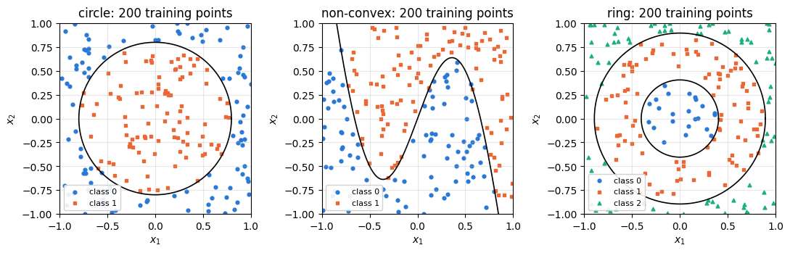
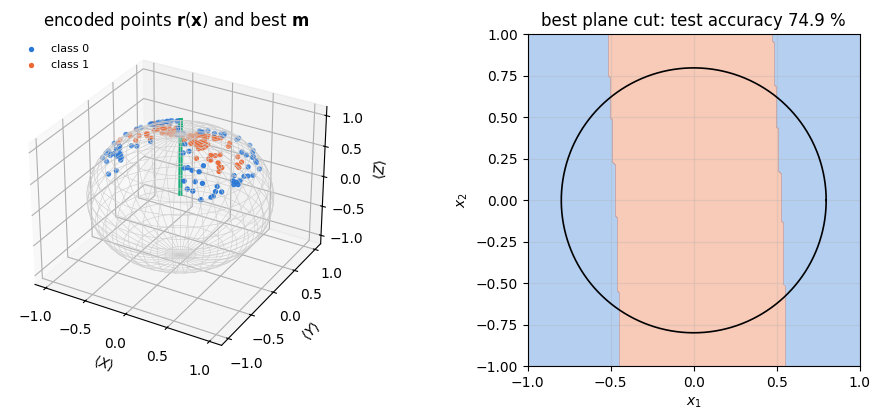
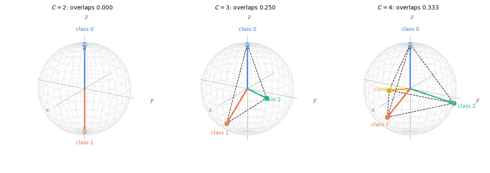
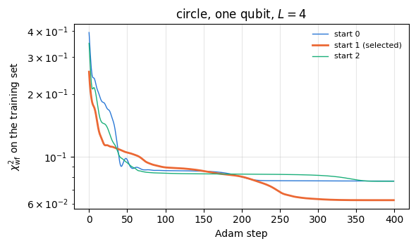
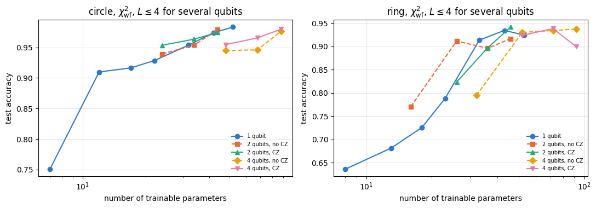
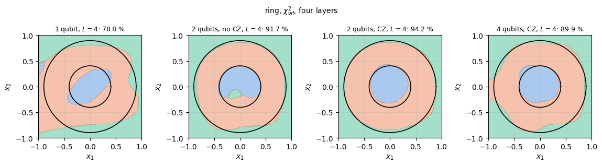
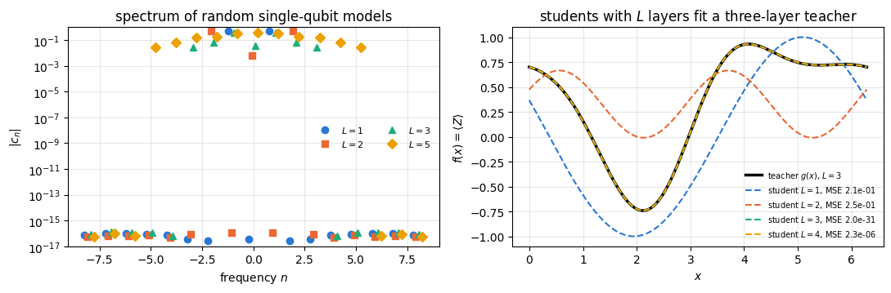

The data re-uploading classifier was introduced in [1]. This notebook implements the protocol and compares its results with those of [1].
1.1 What a classifier does
A classification problem gives \(M\) examples \((\mathbf x_\mu,y_\mu)\), \(\mu=1,\dots,M\): a point \(\mathbf x_\mu\in\mathbb R^d\) of measured numbers and a label \(y_\mu\) from a small set of classes \(\{0,1,\dots,C-1\}\). A classifier is a rule \(\mathbf x\mapsto y\), chosen from a family of rules by adjusting free parameters on the examples (the training set), and judged by the fraction of correct labels on new points (the test set). Two properties decide whether a family of rules is useful: it must contain a rule that reproduces the shape of the true class regions (expressivity), and the training must be able to find that rule from a finite sample.
The classical example is a neural network with one hidden layer. Every hidden neuron receives the whole input, forms a weighted sum \(\mathbf w_i\cdot\mathbf x+b_i\), and passes it through a nonlinear function \(\varphi\); the output is a weighted sum of the \(N\) neuron outputs,
The universal approximation theorem states that functions of the form (1) approximate any continuous function on a bounded domain to any accuracy, provided \(N\) is large enough. This was proved in [2] for continuous sigmoidal \(\varphi\) and in [3] for any continuous, bounded and nonconstant \(\varphi\). The input \(\mathbf x\) is copied into each of the \(N\) neurons.
1.2 A qubit as a classifier
A qubit can be made into a classifier by writing \(\mathbf x\) into the angles of rotation gates, rotating the state further with trainable gates, and reading out where the final state lies on the Bloch sphere: north hemisphere for class 0, south hemisphere for class 1. Section 4 shows that a single qubit which receives the data once is a weak classifier: whatever the trainable rotations do, the boundary between the classes is the intersection of the Bloch sphere with a plane, and on a circle in the data plane the best such boundary gets only three quarters of the points right. A qubit that already carries \(\mathbf x\) cannot be copied into several neurons, as Eq. (1) does with \(\mathbf x\), because the no-cloning theorem (notebook 20, quantum teleportation) forbids copying an unknown quantum state; the classical numbers \(\mathbf x\), however, can be written into the circuit as many times as we like.
The classifier of [1] is built on exactly this idea, data re-uploading: the data are uploaded \(L\) times, each time combined with a different trainable rotation of the same qubit, and the label is read from the fidelities of the final state with a set of label states that are as different from each other as possible. Each layer plays the part of one neuron of Eq. (1), with the rotation angle \(\boldsymbol\theta_i+\mathbf w_i\circ\mathbf x\) in place of \(\mathbf w_i\cdot\mathbf x+b_i\). The authors trained the circuit on nine two-, three- and four-dimensional problems, reached test accuracies above \(90\,\%\) with one qubit on all of them, and found that two and four qubits, with and without entangling gates between the layers, raise the accuracy and reduce the number of layers needed.
1.3 Scope of the claims
A single qubit is simulated exactly by multiplying \(2\times2\) matrices, and the four-qubit classifier by vectors of 16 amplitudes; nothing in this notebook needs a quantum computer, and nothing in it shows an advantage over classical classifiers. The interest of the protocol is the minimal resource count: it shows how much a single qubit can compute when the data enter repeatedly, and it is the simplest model in which the effect of repeated data encoding on the expressivity of quantum models can be worked out exactly (Section 10).
1.4 Road map
Section 3 defines the three data sets of the paper used here (a circle, a non-convex boundary, and a three-class ring problem, in which the plane is split by two concentric circles into an inner disc, the ring between the circles and the region outside), the training and test sets and the accuracy.
Section 4 builds the encoding layer and shows why one upload followed by any rotation separates the classes by a plane through the Bloch sphere; on the circle the best such plane is a strip that gets three quarters of the points right.
Section 5 builds the re-uploading circuit: the layer \(U(\boldsymbol\theta_i+\mathbf w_i\circ\mathbf x)\), the \(L\)-layer circuit, the label states, the fidelity and weighted fidelity costs, prediction and accuracy, each with a checkpoint.
Section 6 trains the circuit with Adam, compiled with lax.scan and vmap over random starts.
Section 7 measures test accuracy against the number of layers on the three problems, draws the learned class regions and compares with the tables of the paper.
Section 8 extends the classifier to two and four qubits, with and without CZ gates, and compares, and Section 9 sums up the role of entanglement and the limit that the number of layers sets for any number of qubits.
Section 10 discusses the expressivity of re-uploading: the analogy with Eq. (1) used by the authors, and the Fourier series in the data whose frequencies are limited by the number of uploads; Section 11 times the simulation.
What you will learn
Physics
how classical data become rotation angles of a qubit, and why a single encoding gives only a plane cut of the Bloch sphere as decision boundary;
how label states that are maximally far apart on the Bloch sphere turn fidelities into class scores;
what entangling gates change in a multi-qubit classifier: the reduced state of a qubit becomes mixed, and its fidelities with the label states can no longer reach one;
why \(L\) uploads of a Pauli rotation make the output a Fourier series of degree \(L\) in the data.
Numerical methods
the fidelity and weighted fidelity cost functions and their minimisation with Adam;
training and test sets, selection of the best of several random starts by the training cost only, and the comparison of measured accuracies with published ones obtained with a different optimiser;
the discrete Fourier transform as a test of the frequency content of a model.
Implementation practice
one model function for one, two and four qubits, built from apply_gate and rdm, batched over data points with jax.vmap;
whole training runs compiled into one lax.scan and batched over random initialisations with jax.vmap;
checkpoints for every piece: unitarity, orthogonality of the label states, a cost that reaches zero on separable data, gradients against finite differences, and the reduction of the non-entangled multi-qubit circuit to independent single qubits.
Conventions: \(\vert0\rangle\) is the \(+1\) eigenstate of \(Z\) (north pole of the Bloch sphere), \(R_a(\vartheta)=e^{-i\vartheta\sigma^a/2}\), qubit \(q\) is tensor axis \(q\).
Configuration
Every notebook of this course starts with the same cell. Choose where to run (DEVICE) and the floating-point precision (PRECISION): "double" = float64/complex128 (default, recommended for physics), "single" = float32/complex64 (half the memory, faster on consumer GPUs, but watch the round-off). All code below derives its dtypes from RDTYPE/CDTYPE and its check tolerances from TOL, so nothing else needs to change.
Code
# ==============================================================================# CONFIGURATION -- adapt to your hardware, then run the notebook top to bottom# ==============================================================================DEVICE ="auto"# "auto": use a GPU if JAX finds one, else CPU | "cpu" | "gpu"PRECISION ="double"# "double": float64/complex128 | "single": float32/complex64import osif DEVICE =="cpu": os.environ["JAX_PLATFORMS"] ="cpu"# must be set BEFORE jax is importedimport stringfrom functools import partialimport mathimport numpy as npimport jaximport jax.numpy as jnpfrom jax import lax# Precision is configurable: "double" = float64/complex128 (default; needed for long time evolutions and# tight validation), "single" = float32/complex64 (half the memory, faster on consumer GPUs).jax.config.update("jax_enable_x64", PRECISION =="double")RDTYPE = jnp.float64 if PRECISION =="double"else jnp.float32 # real dtypeCDTYPE = jnp.complex128 if PRECISION =="double"else jnp.complex64 # complex dtype of all states/operatorsTOL =1e-10if PRECISION =="double"else1e-4# tolerance for sanity checks (asserts)_LETTERS = string.ascii_letters # the 52 einsum index labels a-z, A-Zimport timeimport matplotlib.pyplot as pltif DEVICE =="gpu"and jax.default_backend() =="cpu":print("WARNING: DEVICE='gpu' requested but JAX found no GPU -- running on CPU.")print(f"JAX {jax.__version__} | backend: {jax.default_backend()} | devices: {jax.devices()}")print(f"precision: {PRECISION} -> real {RDTYPE.__name__}, complex {CDTYPE.__name__}, check tolerance TOL={TOL:g}")
JAX 0.11.0 | backend: cpu | devices: [CpuDevice(id=0)]
precision: double -> real float64, complex complex128, check tolerance TOL=1e-10
2. Engine recap and notebook helpers
From the engine we take the rotations \(R_y\), \(R_z\), the CZ gate and \(Z\), apply_gate, the all-zero state, the reduced density matrix rdm, the pure-state fidelity, and the Adam update. The helper cell sets the plot style and a timer for the sections.
Engine recap — the simulator primitives used in this notebook (click to expand)
# ==============================================================================# ENGINE RECAP: the functions of quantum_engine.py (SmoQ.jax) used in this notebook.# All of them are collected, with their mathematics, in the notebook# 'Building the quantum simulator engine'.# States are rank-N tensors of shape (2,)*N; every operator acts through ONE einsum.# ==============================================================================# ----------------------------------------------------------------------------# Elementary matrices: Paulis, Clifford generators, rotations# ----------------------------------------------------------------------------Z = jnp.array([[1, 0], [0, -1]], dtype=CDTYPE)CZ = jnp.diag(jnp.array([1, 1, 1, -1], dtype=CDTYPE))def ry(theta):"""Rotation about y: Ry(theta) = exp(-i theta Y/2) = [[cos, -sin], [sin, cos]](theta/2) (real matrix).""" c, s = jnp.cos(theta /2), jnp.sin(theta /2)return jnp.array([[c, -s], [s, c]], dtype=CDTYPE)def rz(theta):"""Rotation about z: Rz(theta) = exp(-i theta Z/2) = diag(e^{-i theta/2}, e^{+i theta/2}).""" e = jnp.exp(-0.5j* theta)return jnp.array([[e, 0], [0, jnp.conj(e)]], dtype=CDTYPE)# ----------------------------------------------------------------------------# THE core primitive: a k-qubit operator acting on a tensor through ONE einsum# ----------------------------------------------------------------------------def apply_gate(psi, U, qubits):"""Apply a k-qubit operator U to the axes `qubits` of the tensor `psi`. MATH ---- One qubit (k=1), target q: psi'[s_0,..,a,..,s_{N-1}] = sum_b U[a,b] psi[s_0,..,b,..,s_{N-1}] Two qubits (k=2), targets (q1,q2); the 4x4 matrix is reshaped to U[a1,a2,b1,b2]: psi'[.., a1, .., a2, ..] = sum_{b1,b2} U[a1,a2,b1,b2] psi[.., b1, .., b2, ..] This IS the action of (1 x .. x U x .. x 1) -- written without ever building it. EINSUM TRANSLATION (generated automatically below) ------------------ N=3, q=1 : "db,abc->adc" d = new (output) index of qubit 1 N=4, q=(1,3) : "efbd,abcd->aecf" e,f = new indices of qubits 1 and 3 Recipe: label the axes of psi with letters a,b,c,...; give every target qubit a NEW letter (the next unused ones); U carries (new letters)+(old letters of the targets); the output is psi's labels with the target letters replaced by the new ones. IMPLEMENTATION NOTES -------------------- * reshape of U: (2^k,2^k) -> (2,)*2k. Row index = (a1..ak), column = (b1..bk), and the FIRST qubit in `qubits` is the most significant bit of the small matrix, i.e. it corresponds to the LEFT factor of kron(A,B). * `qubits` may be any distinct axes in any order: non-neighbouring gates cost the same. * U need not be unitary: projectors, Kraus operators and Hamiltonian terms reuse this. * psi may be ANY tensor with those axes of size 2: a state (rank N), a density tensor (rank 2N: ket axes 0..N-1, bra axes N..2N-1), ... COST O(2^k * 2^N) operations, O(2^N) memory (dense matrix: O(4^N) both). JAX `qubits` must be static Python ints (they define the einsum string); psi and U are traced, so the function can sit inside jit / grad / vmap / scan. """ qubits =tuple(int(q) for q in qubits) k, n =len(qubits), psi.ndim U = jnp.asarray(U, dtype=psi.dtype).reshape((2,) * (2* k)) # matrix -> rank-2k tensor inp =list(_LETTERS[:n]) # labels of psi's axes new = _LETTERS[n:n + k] # fresh labels for the outputs out = inp.copy()for a, q inzip(new, qubits): out[q] = a # target axes get the new labels sub =f"{''.join(new)}{''.join(inp[q] for q in qubits)},{''.join(inp)}->{''.join(out)}"return jnp.einsum(sub, U, psi)# ----------------------------------------------------------------------------# State preparation# ----------------------------------------------------------------------------def zero_state(N):"""|00...0>: a rank-N tensor of zeros with a single 1 at index (0,0,...,0). JAX arrays are immutable: `.at[idx].set(v)` returns an updated COPY (functional style)."""return jnp.zeros((2,) * N, dtype=CDTYPE).at[(0,) * N].set(1.0)# ----------------------------------------------------------------------------# Reduced density matrices & observables (matrix-free)# ----------------------------------------------------------------------------def rdm(psi, keep):"""Reduced density matrix of the qubits `keep` from a PURE state: rho_A = Tr_B |psi><psi|. MATH rho_A[a, a'] = sum_{b} psi[a, b] psi^*[a', b] (a: indices of A, b: of the rest B) EINSUM TRANSLATION N=3, keep=(0,): "abc,Abc->aA" with operands psi, psi^* * letters of B (b,c) appear in BOTH operands and not in the output -> summed = traced out * the kept axis gets a different letter in the second operand -> stays open (a and A) The full |psi><psi| (4^N numbers) is never formed; cost O(2^N 2^|A|). Returns a (2^|A|, 2^|A|) matrix with row/column order following `keep`. """ keep =tuple(int(q) for q in keep) n, k = psi.ndim, len(keep) a =list(_LETTERS[:n]) b = a.copy()for new, q inzip(_LETTERS[n:n + k], keep): b[q] = new sub =f"{''.join(a)},{''.join(b)}->{''.join(a[q] for q in keep)}{''.join(b[q] for q in keep)}"return jnp.einsum(sub, psi, jnp.conj(psi)).reshape(2** k, 2** k)# ----------------------------------------------------------------------------# State characteristics: entropies, fidelity, negativity# ----------------------------------------------------------------------------def fidelity_pure(psi, phi):"""F = |<psi|phi>|^2 between two pure states."""return jnp.abs(jnp.vdot(psi, phi)) **2# ----------------------------------------------------------------------------# Variational circuits: ansatz, gradients, optimizers# ----------------------------------------------------------------------------def adam_init(theta):"""Adam state: (first moment m, second moment v, step counter t)."""return (jnp.zeros_like(theta), jnp.zeros_like(theta), 0)def adam_update(theta, g, state, lr=0.05, b1=0.9, b2=0.999, eps=1e-8):"""One Adam step: m <- b1 m + (1-b1) g, v <- b2 v + (1-b2) g^2, theta <- theta - lr * m_hat / (sqrt(v_hat) + eps), hats = bias-corrected moments. Momentum (m) averages noisy gradients (great with SPSA); v gives a per-parameter step size.""" m, v, t = state t = t +1 m = b1 * m + (1- b1) * g v = b2 * v + (1- b2) * g **2 theta = theta - lr * (m / (1- b1 ** t)) / (jnp.sqrt(v / (1- b2 ** t)) + eps)return theta, (m, v, t)
Code
# ==============================================================================# PLOT STYLE + small helpers# ==============================================================================PALETTE = ["#2a78d6", "#eb6834", "#1baf7a", "#eda100", "#e87ba4", "#4a3aa7"] # colour-blind-friendly, fixed orderMARKERS = ["o", "s", "^", "D", "v", "P"]plt.rcParams.update({"axes.prop_cycle": plt.cycler(color=PALETTE), "axes.grid": True,"grid.alpha": 0.3, "font.size": 10, "legend.frameon": False})SECTION_TIMES = {} # wall-clock seconds per section, printed in Section 11_T0 = [time.perf_counter(), None]def section_timer(name):"""Close the timing of the previous section and open a new one called `name`.""" now = time.perf_counter()if _T0[1] isnotNone: SECTION_TIMES[_T0[1]] = now - _T0[0] _T0[0], _T0[1] = now, namedef max_abs(a):"""Largest absolute entry of an array, as a Python float."""returnfloat(jnp.max(jnp.abs(jnp.asarray(a))))section_timer("3 data")
3. Three classification problems
All points are drawn uniformly from the square \([-1,1]^2\), and the label follows from a fixed geometric rule. We use three of the problems of the paper, with its definitions:
circle (2 classes): class 1 if \(x_1^2+x_2^2<r^2\) with \(r=\sqrt{2/\pi}\), class 0 otherwise. The radius makes the disc area \(\pi r^2=2\) half of the square, so random guessing scores \(50\,\%\);
non-convex (2 classes): class 1 above the curve \(x_2=-2x_1+\tfrac32\sin(\pi x_1)\), class 0 below it. Neither region is convex, and the wiggles of the boundary have to be resolved;
ring (3 classes; called annulus in the paper): the region between two concentric circles, of radii \(r_1=\sqrt{0.8-2/\pi}\) and \(r_2=\sqrt{0.8}\). Class 0 lies inside the inner circle, \(\vert\mathbf x\vert<r_1\); class 1 in the ring between the circles, \(r_1<\vert\mathbf x\vert<r_2\); class 2 outside the outer circle. The ring area \(\pi(r_2^2-r_1^2)=2\) is again half of the square; the inner disc covers \(12.8\,\%\) and the outer region \(37.2\,\%\).
As in the paper, the training set has 200 points and the test set 4000 points, drawn independently. The accuracy is the fraction of test points that receive the correct label. With 4000 test points its statistical uncertainty is \(\sqrt{a(1-a)/4000}\approx0.003\) at \(a=0.95\), so differences of one percentage point between models are resolved; differences caused by the particular 200 training points are larger, and are part of what Section 7 compares.
Code
# ==============================================================================# STEP 1: the data sets# ==============================================================================R_CIRCLE = np.sqrt(2/ np.pi)R_ANN = (np.sqrt(0.8-2/ np.pi), np.sqrt(0.8))PROBLEMS = {"circle": 2, "non-convex": 2, "ring": 3} # name -> number of classes Cdef labels_of(points, problem):"""Class labels of the points (shape (M, 2)) for the three problems. MATH circle: y = 1 if x1^2 + x2^2 < 2/pi non-convex: y = 1 if x2 > -2 x1 + 1.5 sin(pi x1) ring: y = 0, 1, 2 for |x| < r1, r1 < |x| < r2, |x| > r2, r1^2 = 0.8 - 2/pi, r2^2 = 0.8 """ r2 = jnp.sum(points **2, axis=1)if problem =="circle":return (r2 < R_CIRCLE **2).astype(jnp.int32)if problem =="non-convex":return (points[:, 1] >-2* points[:, 0] +1.5* jnp.sin(jnp.pi * points[:, 0])).astype(jnp.int32)if problem =="ring":return (r2 > R_ANN[0] **2).astype(jnp.int32) + (r2 > R_ANN[1] **2).astype(jnp.int32)raiseValueError(problem)def make_data(key, n, problem):"""n points uniform in [-1, 1]^2 and their labels.""" pts = jax.random.uniform(key, (n, 2), dtype=RDTYPE, minval=-1.0, maxval=1.0)return pts, labels_of(pts, problem)M_TRAIN, M_TEST =200, 4000DATA = {}for i, problem inenumerate(PROBLEMS): k_tr, k_te = jax.random.split(jax.random.PRNGKey(55+ i)) Xtr, ytr = make_data(k_tr, M_TRAIN, problem) Xte, yte = make_data(k_te, M_TEST, problem) DATA[problem] =dict(Xtr=Xtr, ytr=ytr, Xte=Xte, yte=yte, C=PROBLEMS[problem]) fr = [float(jnp.mean(yte == c)) for c inrange(PROBLEMS[problem])]print(f"{problem:10s}: C = {PROBLEMS[problem]}, class fractions in the test set "+", ".join(f"{f:.3f}"for f in fr))def draw_boundaries(ax, problem):"""Draw the true class boundaries of a problem as black lines.""" t = np.linspace(0, 2* np.pi, 300)if problem =="circle": ax.plot(R_CIRCLE * np.cos(t), R_CIRCLE * np.sin(t), "k-", lw=1.2)elif problem =="ring":for r in R_ANN: ax.plot(r * np.cos(t), r * np.sin(t), "k-", lw=1.2)else: u = np.linspace(-1, 1, 300) ax.plot(u, -2* u +1.5* np.sin(np.pi * u), "k-", lw=1.2) ax.set_xlim(-1, 1) ax.set_ylim(-1, 1) ax.set_aspect("equal")fig, axes = plt.subplots(1, 3, figsize=(11, 3.8))for ax, (problem, d) inzip(axes, DATA.items()):for c inrange(d["C"]): sel = np.asarray(d["ytr"]) == c ax.scatter(np.asarray(d["Xtr"])[sel, 0], np.asarray(d["Xtr"])[sel, 1], s=12, color=PALETTE[c], marker=MARKERS[c], label=f"class {c}") draw_boundaries(ax, problem) ax.set_xlabel("$x_1$") ax.set_ylabel("$x_2$") ax.set_title(f"{problem}: 200 training points") ax.legend(fontsize=8, loc="lower left", frameon=True, framealpha=0.9)fig.tight_layout()plt.show()
circle : C = 2, class fractions in the test set 0.510, 0.490
non-convex: C = 2, class fractions in the test set 0.506, 0.494
ring : C = 3, class fractions in the test set 0.120, 0.508, 0.372

The measured class fractions agree with the areas computed above to within the sampling fluctuation of 4000 points. The circle is the easiest shape and the ring problem the hardest: its middle class is a ring that surrounds the inner disc, so a classifier must produce a region with a hole.
Code
section_timer("4 one upload")
4. One qubit, one upload
4.1 The encoding layer
A general single-qubit rotation needs three angles. We use the Euler form
Multiplying the three matrices \(R_z(\vartheta)=\mathrm{diag}(e^{-i\vartheta/2},e^{i\vartheta/2})\) and \(R_y(\vartheta)=\cos\frac\vartheta2\,\mathbb 1-i\sin\frac\vartheta2\,\sigma^y\) gives, with \(c=\cos\frac{\phi_1}2\) and \(s=\sin\frac{\phi_1}2\),
a matrix of determinant \(c^2+s^2=1\). Every element of \(\mathrm{SU}(2)\) has this form (the Euler decomposition derived in notebook 09, quantum gates and circuits, Section 3.4), so Eq. (2) is the general rotation of the Bloch sphere. The paper writes the same family in two other conventions. Its Eq. (12), \(e^{i\phi_2\sigma_z}e^{i\phi_1\sigma_y}e^{i\phi_3\sigma_z}\), is our \(U(-2\phi_1,-2\phi_2,-2\phi_3)\), and its explicit matrix, Eq. (29), is our \(U(\phi_1,-\phi_3,-\phi_2)\); the authors’ published code uses \(U(\phi_1,-\phi_2,-\phi_3)\). All are reparametrisations of the same set of rotations, which the trainable angles and weights absorb.
A two-dimensional data point is uploaded by using its coordinates as angles, \(U(\mathbf x)\equiv U(x_1,x_2,0)\). Acting on \(\vert0\rangle\), \(R_z(0)\) does nothing, \(R_y(x_1)\) tilts the Bloch vector by the polar angle \(x_1\) and \(R_z(x_2)\) turns it by the azimuth \(x_2\). The data point lands on the Bloch sphere at
The cell implements the closed form of Eq. (3) and checks it against the product of the engine rotations of Eq. (2), unitarity, the determinant, and the Bloch vector of Eq. (4) for the 200 training points of the circle.
Code
# ==============================================================================# STEP 2: the general rotation U(phi) and the encoding of a data point# ==============================================================================def u3(phi):"""General single-qubit rotation, Eq. (2): U(phi) = Rz(phi_2) Ry(phi_1) Rz(phi_3). MATH U = [[e^{-i(p2+p3)/2} c, -e^{-i(p2-p3)/2} s], [e^{i(p2-p3)/2} s, e^{i(p2+p3)/2} c]], c = cos(p1/2), s = sin(p1/2) (Eq. (3)) IMPLEMENTATION the closed form of Eq. (3): one matrix instead of three matrices and two products, which matters because training evaluates this gate millions of times. phi is a traced array of length 3, so the gate is differentiable and can sit inside jit / vmap / grad. """ c, s = jnp.cos(phi[0] /2), jnp.sin(phi[0] /2) ep, em = jnp.exp(-0.5j* (phi[1] + phi[2])), jnp.exp(-0.5j* (phi[1] - phi[2]))return jnp.array([[ep * c, -em * s], [jnp.conj(em) * s, jnp.conj(ep) * c]], dtype=CDTYPE)def u3_euler(phi):"""Eq. (2) as a product of the engine rotations (independent reference for `u3`)."""return rz(phi[1]) @ ry(phi[0]) @ rz(phi[2])def bloch_vector(psi):"""Bloch vector (<X>, <Y>, <Z>) of a single-qubit state psi = (a, b). MATH <X> = 2 Re(a^* b), <Y> = 2 Im(a^* b), <Z> = |a|^2 - |b|^2 """ a, b = psi[0], psi[1]return jnp.real(jnp.array([2* jnp.conj(a) * b, -2j* jnp.conj(a) * b, jnp.abs(a) **2- jnp.abs(b) **2]))def encode(x):"""One upload of a 2D point: U(x1, x2, 0)|0>."""return u3(jnp.array([x[0], x[1], 0.0], dtype=RDTYPE)) @ jnp.array([1.0, 0.0], dtype=CDTYPE)# CHECKPOINT: Eq. (3) against the product of engine rotations, unitarity and determinant for random anglesphis = np.asarray(jax.random.uniform(jax.random.PRNGKey(1), (50, 3), RDTYPE, -2* np.pi, 2* np.pi))Us = jax.vmap(u3)(jnp.asarray(phis))err_closed = max_abs(Us - jax.vmap(u3_euler)(jnp.asarray(phis)))err_unit = max_abs(jnp.einsum("nji,njk->nik", Us.conj(), Us) - jnp.eye(2))err_det = max_abs(jnp.linalg.det(Us) -1.0)print(f"max |Eq. (3) - Rz Ry Rz| = {err_closed:.2e}")print(f"max |U^dag U - 1| = {err_unit:.2e}")print(f"max |det U - 1| = {err_det:.2e}")assert err_closed < TOL and err_unit < TOL and err_det < TOL# CHECKPOINT: Bloch vector of the encoded state, Eq. (4)pts = DATA["circle"]["Xtr"]r_num = jax.vmap(lambda x: bloch_vector(encode(x)))(pts)r_eq4 = jnp.stack([jnp.sin(pts[:, 0]) * jnp.cos(pts[:, 1]), jnp.sin(pts[:, 0]) * jnp.sin(pts[:, 1]), jnp.cos(pts[:, 0])], axis=1)err_bloch = max_abs(r_num - r_eq4)print(f"max |r(x) - Eq. (4)| = {err_bloch:.2e} (200 training points of the circle)")assert err_bloch < TOL
max |Eq. (3) - Rz Ry Rz| = 5.27e-16
max |U^dag U - 1| = 2.22e-16
max |det U - 1| = 2.23e-16
max |r(x) - Eq. (4)| = 4.44e-16 (200 training points of the circle)
All errors are at the level of round-off: Eq. (3) equals the product \(R_zR_yR_z\), it is unitary with unit determinant, and the encoded training points sit at the Bloch vectors of Eq. (4). Because \(\vert x_1\vert\leq1\), every point lies within a polar angle of one radian from the north pole, on a cap that covers the azimuths \(-1\leq x_2\leq1\).
4.2 A trainable rotation after one upload: a plane through the Bloch sphere
After the upload we may apply any trainable rotation \(U(\boldsymbol\phi)\) and measure in the computational basis. The probability of the outcome 0 is the fidelity with \(\vert0\rangle\). A rotation of the state by \(U\) is a rotation \(\mathcal R\) of its Bloch vector, so
Here we used the fidelity of two pure states in terms of their Bloch vectors, \(\vert\langle\phi\vert\psi\rangle\vert^2=\mathrm{Tr}(\rho_\phi\rho_\psi)=\frac12(1+\mathbf r_\phi\cdot\mathbf r_\psi)\), which follows from \(\rho=\frac12(\mathbb 1+\mathbf r\cdot\boldsymbol\sigma)\) and \(\mathrm{Tr}(\sigma^a\sigma^b)=2\delta_{ab}\), with \(\mathbf r_\phi=\mathbf e_z\) for \(\vert0\rangle\). The trainable rotation only chooses the unit vector \(\mathbf m\). If a point is assigned class 0 when \(F_0>\lambda\), for some threshold \(\lambda\), the decision boundary is \(\mathbf m\cdot\mathbf r(\mathbf x)=2\lambda-1\), so the Bloch sphere is cut by a plane. This is a linear classifier acting on the three features \(\mathbf r(\mathbf x)\) of Eq. (4). The features are nonlinear functions of \(\mathbf x\), but they are fixed, and no training of \(U(\boldsymbol\phi)\) can change them.
Because the family of rules is so small, we do not need to train it: we can try all of them. The cell checks Eq. (5) for a random rotation, then scans 20000 directions \(\mathbf m\) spread evenly over the sphere (a Fibonacci lattice) and, for each, every threshold between consecutive training points, and keeps the plane with the highest training accuracy. Its test accuracy is the best that one upload can achieve on the circle, up to the choice made on 200 training points.
Code
# ==============================================================================# STEP 3: one upload + one rotation = a plane cut; the best plane for the circle by exhaustive search# ==============================================================================def one_upload_p0(phi, x):"""Probability of outcome 0 after U(phi) U(x)|0> (Eq. (5)).""" psi = u3(phi) @ encode(x)return jnp.abs(psi[0]) **2d = DATA["circle"]r_tr = jax.vmap(lambda x: bloch_vector(encode(x)))(d["Xtr"])r_te = jax.vmap(lambda x: bloch_vector(encode(x)))(d["Xte"])# CHECKPOINT: Eq. (5) for a random rotation, with m = Bloch vector of U(phi)^dag |0>phi_r = jax.random.uniform(jax.random.PRNGKey(8), (3,), RDTYPE, 0, 2* np.pi)m_r = bloch_vector(u3(phi_r).conj().T @ jnp.array([1.0, 0.0], dtype=CDTYPE))err_plane = max_abs(jax.vmap(lambda x: one_upload_p0(phi_r, x))(d["Xte"]) -0.5* (1+ r_te @ m_r))print(f"max |F_0 - (1 + m.r)/2| over the test set = {err_plane:.2e} (Eq. (5))")assert err_plane < TOLdef best_plane(r, y, n_dir=20000):"""Plane m.r > t (-> class 1) with the highest accuracy on (r, y), over n_dir directions and all thresholds. IMPLEMENTATION for each direction sort the projections; predicting class 1 above the k-th smallest projection is correct for the class-0 points among the k smallest and the class-1 points among the others, so cumulative sums give the accuracy of every threshold at once. """ i = np.arange(n_dir) +0.5 th, ph = np.arccos(1-2* i / n_dir), np.pi * (1+ np.sqrt(5)) * i # Fibonacci lattice Mdir = np.stack([np.sin(th) * np.cos(ph), np.sin(th) * np.sin(ph), np.cos(th)], axis=1) P = np.asarray(r) @ Mdir.T # (M, n_dir) order = np.argsort(P, axis=0) ys = np.asarray(y)[order] n0 = np.vstack([np.zeros(n_dir), np.cumsum(1- ys, axis=0)]) # class 0 below threshold n1 = np.vstack([np.zeros(n_dir), np.cumsum(ys, axis=0)]) acc = (n0 + (n1[-1] - n1)) /len(ys) k, j = np.unravel_index(np.argmax(acc), acc.shape) Ps = np.sort(P[:, j]) t = Ps[0] -1if k ==0else (Ps[-1] +1if k ==len(ys) else0.5* (Ps[k -1] + Ps[k]))return Mdir[j], t, acc[k, j]m_best, t_best, acc_plane_tr = best_plane(r_tr, d["ytr"])acc_plane_te =float(np.mean((np.asarray(r_te) @ m_best > t_best).astype(int) == np.asarray(d["yte"])))print(f"best plane: m = ({m_best[0]:.3f}, {m_best[1]:.3f}, {m_best[2]:.3f}), threshold {t_best:.4f}")print(f"training accuracy {100* acc_plane_tr:.1f} %, test accuracy {100* acc_plane_te:.1f} %")fig = plt.figure(figsize=(10, 4.3))ax = fig.add_subplot(1, 2, 1, projection="3d")rt = np.asarray(r_tr)for c inrange(2): sel = np.asarray(d["ytr"]) == c ax.scatter(rt[sel, 0], rt[sel, 1], rt[sel, 2], s=8, color=PALETTE[c], label=f"class {c}")u, v = np.meshgrid(np.linspace(0, 2* np.pi, 40), np.linspace(0, np.pi, 20))ax.plot_wireframe(np.cos(u) * np.sin(v), np.sin(u) * np.sin(v), np.cos(v), color="0.8", lw=0.4)ax.quiver(0, 0, 0, *(1.3* m_best), color=PALETTE[2], lw=3)ax.set_xlabel(r"$\langle X\rangle$")ax.set_ylabel(r"$\langle Y\rangle$")ax.set_zlabel(r"$\langle Z\rangle$")ax.set_title(r"encoded points $\mathbf{r}(\mathbf{x})$ and best $\mathbf{m}$")ax.legend(fontsize=8, loc="upper left")ax2 = fig.add_subplot(1, 2, 2)g = np.linspace(-1, 1, 151)G = jnp.asarray(np.stack(np.meshgrid(g, g), -1).reshape(-1, 2))rg = np.asarray(jax.vmap(lambda x: bloch_vector(encode(x)))(G))ax2.contourf(g, g, (rg @ m_best > t_best).astype(float).reshape(151, 151), levels=[-0.5, 0.5, 1.5], colors=[PALETTE[0], PALETTE[1]], alpha=0.35)draw_boundaries(ax2, "circle")ax2.set_xlabel("$x_1$")ax2.set_ylabel("$x_2$")ax2.set_title(f"best plane cut: test accuracy {100* acc_plane_te:.1f} %")fig.tight_layout()plt.show()
max |F_0 - (1 + m.r)/2| over the test set = 7.77e-16 (Eq. (5))
best plane: m = (0.029, -0.043, 0.999), threshold 0.8771
training accuracy 82.0 %, test accuracy 74.9 %

The best plane points almost exactly along \(\mathbf e_z\). A plane \(\mathbf m\cdot\mathbf r=t\) with \(\mathbf m\approx\mathbf e_z\) thresholds \(\langle Z\rangle=\cos x_1\), so in the data plane it is the vertical strip \(\vert x_1\vert<a\): points near the vertical axis are called “inside”, whatever their \(x_2\). This is the best that one upload can do on the circle. The strip misclassifies the parts of the strip above and below the disc and the two caps of the disc outside the strip, and gets about three quarters of the test points right (the exact optimum of such strips, \(75.8\,\%\), is computed in Section 9). The best plane on the training set reaches \(82.0\,\%\) there and \(74.9\,\%\) on the test set; the difference comes from choosing one of many planes on only 200 points, which fits their particular arrangement.
The azimuth carries \(x_2\), but a plane cannot combine “small \(x_1\)” and “small \(x_2\)” into “small \(x_1^2+x_2^2\)”. More trainable rotations after the single upload do not help, since their product is again one rotation.
For one layer on this problem the paper reports a success rate of \(0.50\), and the caption of its Fig. 6 describes dividing the plane in half as the best that the classifier can do; the strip found here shows that one layer can do better. Section 7 trains the one-layer classifier and compares.
Code
section_timer("5 re-uploading circuit")
5. The re-uploading classifier
5.1 Uploading the data again
The data can be uploaded a second time after the trainable rotation, followed by a second trainable rotation, and so on. The state after \(L\) such layers is
The rotations no longer combine into one, because \(U(\mathbf x)\) sits between them, and the final state is a nonlinear function of \(\mathbf x\) that becomes richer with every layer. The paper merges upload and processing into one gate per layer and gives each upload its own weights,
where \(\circ\) is the elementwise (Hadamard) product and missing components of \(\mathbf x\) are set to zero (paper, Eq. (5)). For two-dimensional data \(x_1\) enters the polar rotation \(R_y\) and \(x_2\) the outer \(R_z\), so each layer has \(3+d=5\) parameters. The classifier is
Figure 1 shows both versions. The compressed layer of Eq. (7) is not the same gate as \(U(\boldsymbol\phi_i)U(\mathbf x)\): it is a different model with half the depth, and the one used in all experiments of the paper and of this notebook.
Figure 1. The single-qubit classifier with data re-uploading. (a) Each layer uploads the data point with \(U(\mathbf x)\) and processes it with a trainable rotation \(U(\boldsymbol\phi_i)\). (b) The compressed layers of Eq. (7) put data and parameters into one rotation; the weights \(\mathbf w_i\) rescale the data in each layer. The output is the set of fidelities \(F_c\) of the final state with the label states (Section 5.3).
The analogy with a neural network. Comparing Eq. (7) with Eq. (1), the weights \(\mathbf w_i\) play the part of the neuron weights, the angles \(\boldsymbol\theta_i\) that of the biases \(b_i\), and the number of layers \(L\) that of the number of hidden neurons; the nonlinear activation is replaced by the trigonometric functions of Eq. (3). The difference is that the neurons of Eq. (1) act in parallel and their outputs are summed, while the layers of Eq. (8) act one after another on the same qubit. Section 10 returns to what this analogy does and does not prove.
5.2 The circuit in code
The code below is written once for \(Q\) qubits, because Section 8 needs it; for now \(Q=1\). The parameters of all layers are stored in arrays theta of shape \((Q,L,3)\) and w of shape \((Q,L,d)\). For a data point x the angles of layer \(l\) on qubit \(q\) are theta[q, l] + w[q, l] * x, padded with zeros to three components, and the gate is applied with apply_gate(psi, u3(phi), [q]).
The loop over the layers is a lax.scan: the body is traced once, whatever \(L\) is, which keeps the compilation time short when we train dozens of classifiers with different \(L\). The loop over the qubits is a Python loop, because qubit indices must be static. The CZ gates of Section 8 need one more idea inside the scan, where the layer index \(l\) is a traced number and cannot select gates by a Python if. A CZ gate is diagonal in the computational basis, and so is any product of CZ gates: applying the CZ gates that follow layer \(l\) multiplies every amplitude \(\psi_{s_0\dots s_{Q-1}}\) by a sign \(\pm1\). We compute the two sign patterns (after odd and after even layers) once, by applying the CZ gates with apply_gate to a tensor of ones, and inside the scan we multiply the state by the pattern of the current layer, or by 1 after the last layer. Section 8.1 explains the placement of the gates; here they are switched off.
Two checks: for \(Q=1\) the circuit must equal the product of \(L\) matrices \(R_z R_y R_z\) built from the engine rotations; and the state must stay normalised.
Code
# ==============================================================================# STEP 4: the L-layer re-uploading circuit (Q qubits; CZ entanglers optional, Section 8)# ==============================================================================CZ_PAIRS = {1: ([], []), 2: ([(0, 1)], [(0, 1)]), 4: ([(0, 1), (2, 3)], [(1, 2), (0, 3)])} # after odd / even layersdef layer_angles(theta_ql, w_ql, x):"""Angles of one compressed layer, Eq. (7): phi = theta + w o x (x padded with zeros to 3 components).""" d = x.shape[0]return theta_ql + jnp.concatenate([w_ql * x, jnp.zeros(3- d, dtype=x.dtype)])def cz_signs(Q):"""Sign patterns of the CZ gates after odd and after even layers, shape (2,) + (2,)*Q. MATH CZ = diag(1, 1, 1, -1) is diagonal, so a product of CZ gates acts on psi[s_0..s_{Q-1}] as a multiplication by sign[s_0..s_{Q-1}] = +-1 IMPLEMENTATION apply the CZ gates with apply_gate to a tensor of ones: the result IS the diagonal """ pats = []for pairs in CZ_PAIRS[Q]: t = jnp.ones((2,) * Q, dtype=CDTYPE)for pair in pairs: t = apply_gate(t, CZ, list(pair)) pats.append(t)return jnp.stack(pats)def classifier_state(theta, w, x, entangle=False):"""Final state of the re-uploading classifier, Eq. (8), on Q qubits. MATH |psi(x)> = R_L E_{L-1} R_{L-1} ... E_1 R_1 |0...0>, R_l = prod_q U(theta[q,l] + w[q,l] o x) on qubit q, E_l = CZ gates on the pairs CZ_PAIRS[Q][(l-1) % 2] (identity if entangle=False); no E after R_L IMPLEMENTATION state = rank-Q tensor; rotations by apply_gate; layers in a lax.scan over (theta[:, l], w[:, l], l); the CZ gates as a multiplication by the sign pattern of cz_signs (identity after the last layer) COST O(L Q 2^Q) per data point """ Q, L = theta.shape[0], theta.shape[1] signs = cz_signs(Q)def layer(psi, inp): th_l, w_l, l = inpfor q inrange(Q): psi = apply_gate(psi, u3(layer_angles(th_l[q], w_l[q], x)), [q])if entangle: psi = psi * jnp.where(l < L -1, signs[l %2], 1.0)return psi, None psi, _ = lax.scan(layer, zero_state(Q), (jnp.swapaxes(theta, 0, 1), jnp.swapaxes(w, 0, 1), jnp.arange(L)))return psi# CHECKPOINT: Q = 1 against the product of the engine rotations Rz Ry Rz, layer by layerL_chk =5k1, k2 = jax.random.split(jax.random.PRNGKey(3))theta_chk = jax.random.uniform(k1, (1, L_chk, 3), RDTYPE, 0, 2* np.pi)w_chk = jax.random.normal(k2, (1, L_chk, 2), RDTYPE)x_chk = DATA["ring"]["Xtr"][0]psi_ref = np.array([1.0, 0.0], dtype=complex)for l inrange(L_chk): phi = np.asarray(theta_chk[0, l]) + np.array([*(np.asarray(w_chk[0, l]) * np.asarray(x_chk)), 0.0]) psi_ref = np.asarray(u3_euler(jnp.asarray(phi))) @ psi_refpsi_num = classifier_state(theta_chk, w_chk, x_chk)err_circ = max_abs(psi_num - psi_ref)err_norm =abs(float(jnp.sum(jnp.abs(psi_num) **2)) -1.0)print(f"L = {L_chk}: max |psi - product of Rz Ry Rz matrices| = {err_circ:.2e}, | <psi|psi> - 1 | = {err_norm:.2e}")assert err_circ < TOL and err_norm < TOL
L = 5: max |psi - product of Rz Ry Rz matrices| = 2.48e-16, | <psi|psi> - 1 | = 0.00e+00
The scanned circuit reproduces the explicit product of five rotations to round-off and keeps the norm.
5.3 Label states
The output of the classifier is a state, and a class has to be read from it. The paper assigns to every class \(c\) a label state\(\vert\tilde\psi_c\rangle\) and chooses the label states as far apart from each other as possible on the Bloch sphere (maximal orthogonality). By the fidelity formula of Section 4.2, the overlap of two label states with Bloch vectors \(\mathbf n_c\), \(\mathbf n_{c'}\) is \(\vert\langle\tilde\psi_c\vert\tilde\psi_{c'}\rangle\vert^2=\frac12(1+\mathbf n_c\cdot\mathbf n_{c'})\), so we need \(C\) unit vectors with the smallest possible mutual scalar products:
north and south pole: \(\vert0\rangle\), \(\vert1\rangle\)
\(-1\)
\(0\)
3
three directions \(120^\circ\) apart on a great circle
\(-\frac12\)
\(\frac14\)
4
vertices of a regular tetrahedron
\(-\frac13\)
\(\frac13\)
For three classes we put the great circle in the \(x\)–\(z\) plane with one vector at the north pole; for four classes one vertex of the tetrahedron is at the north pole and the other three at polar angle \(\arccos(-\frac13)\) and azimuths \(0,\pm\frac{2\pi}3\). Both orientations follow the authors’ published code [4]; the paper’s Fig. 3 shows the tetrahedron. A Bloch vector with polar angle \(\vartheta\) and azimuth \(\varphi\) belongs to the state \(\cos\frac\vartheta2\vert0\rangle+e^{i\varphi}\sin\frac\vartheta2\vert1\rangle\). With \(C\) label states, the expected fidelities of a perfectly classified point of class \(s\) form the vector
which enters the weighted cost of Section 5.4. The paper quotes \(Y_r=\frac13\) for the tetrahedron.
Code
# ==============================================================================# STEP 5: label states and the target fidelities Y_c(s)# ==============================================================================def state_from_bloch(theta_b, phi_b):"""cos(theta/2)|0> + e^{i phi} sin(theta/2)|1>: the pure state with polar angle theta and azimuth phi."""return jnp.array([jnp.cos(theta_b /2), jnp.exp(1j* phi_b) * jnp.sin(theta_b /2)], dtype=CDTYPE)def label_states(C):"""Maximally orthogonal single-qubit label states for C = 2, 3, 4 classes (rows of a (C, 2) array)."""if C ==2: angles = [(0.0, 0.0), (np.pi, 0.0)]elif C ==3: angles = [(0.0, 0.0), (2* np.pi /3, 0.0), (2* np.pi /3, np.pi)] # x-z great circleelif C ==4: t = np.arccos(-1/3) angles = [(0.0, 0.0), (t, 0.0), (t, 2* np.pi /3), (t, -2* np.pi /3)] # tetrahedronelse:raiseValueError("C must be 2, 3 or 4")return jnp.stack([state_from_bloch(a, b) for a, b in angles])def target_fidelities(C):"""Matrix Y[s, c] = |<psi_c|psi_s>|^2 of Eq. (9): row s = expected fidelities of a point of class s.""" S = label_states(C)return jnp.abs(S.conj() @ S.T) **2# CHECKPOINT: normalisation and the overlaps of the tablefor C, off in [(2, 0.0), (3, 0.25), (4, 1/3)]: Yc = target_fidelities(C) expect = off * jnp.ones((C, C)) + (1- off) * jnp.eye(C) err_lab = max_abs(Yc - expect)print(f"C = {C}: overlaps |<psi_c|psi_c'>|^2 for c != c' = {float(Yc[0, 1]):.6f}, max error vs table = {err_lab:.2e}")assert err_lab < TOL
C = 2: overlaps |<psi_c|psi_c'>|^2 for c != c' = 0.000000, max error vs table = 3.75e-33
C = 3: overlaps |<psi_c|psi_c'>|^2 for c != c' = 0.250000, max error vs table = 2.22e-16
C = 4: overlaps |<psi_c|psi_c'>|^2 for c != c' = 0.333333, max error vs table = 1.67e-16
The label states have the overlaps of the table. The cell draws them on the Bloch sphere, using the Bloch vectors of the states returned by label_states, so the picture shows exactly the states the classifier is trained against.
Code
# ==============================================================================# STEP 5b: the label states on the Bloch sphere (Figure 2)# ==============================================================================fig = plt.figure(figsize=(12, 4.2))u, v = np.meshgrid(np.linspace(0, 2* np.pi, 36), np.linspace(0, np.pi, 18))for k, C inenumerate((2, 3, 4)): ax = fig.add_subplot(1, 3, k +1, projection="3d") ax.plot_wireframe(np.cos(u) * np.sin(v), np.sin(u) * np.sin(v), np.cos(v), color="0.85", lw=0.4)for a, name inenumerate(("x", "y", "z")): # coordinate axes e = np.zeros(3) e[a] =1.2 ax.plot(*np.stack([-e, e], axis=1), color="0.6", lw=0.6) ax.text(*(1.3* e), f"${name}$", color="0.4", fontsize=10) nvec = np.asarray(jax.vmap(bloch_vector)(label_states(C))) # (C, 3) Bloch vectors of the label statesfor c1 inrange(C): # edges between the label pointsfor c2 inrange(c1 +1, C):if C >2: ax.plot(*np.stack([nvec[c1], nvec[c2]], axis=1), color="k", lw=1.0, ls="--")for c inrange(C): ax.quiver(0, 0, 0, *nvec[c], color=PALETTE[c], lw=2.5, arrow_length_ratio=0.12) ax.scatter(*nvec[c], s=60, color=PALETTE[c], depthshade=False) ax.text(*(1.3* nvec[c]), f"class {c}", color=PALETTE[c], fontsize=9, ha="center") ax.set_xlim(-1, 1) ax.set_ylim(-1, 1) ax.set_zlim(-1, 1) ax.set_box_aspect((1, 1, 1)) ax.set_axis_off() overlap =float(target_fidelities(C)[0, 1]) ax.set_title(f"$C={C}$: overlaps {overlap:.3f}", fontsize=10) ax.view_init(elev=20, azim=30)fig.tight_layout()plt.show()

Figure 2. Label states on the Bloch sphere for \(C=2\), \(3\) and \(4\) classes; each arrow is the Bloch vector \(\mathbf n_c\) of the label state of class \(c\). Two classes use the poles, three classes the corners of an equilateral triangle on the great circle in the \(x\)–\(z\) plane, and four classes the vertices of a regular tetrahedron (dashed lines: the edges between the label points).
The overlaps are \(0\), \(\frac14\) and \(\frac13\); no other arrangement of \(C\) points on the sphere makes the largest overlap smaller. Two classes whose label states lie far apart on the sphere are easy to tell apart: a final state close to one label state has a small fidelity with the other. The more classes, the closer the label states must lie, and the less room a single qubit has to separate them. A point is assigned the class whose label state has the largest fidelity with the final state; for \(C=2\) this is the hemisphere rule of Section 4.2.
5.4 Two cost functions
Training needs a single number that measures how wrong the classifier is on the training set. The paper uses two. The fidelity cost (paper, Eq. (7)) pulls every final state towards the label state of its class \(s_\mu\):
The weighted fidelity cost (paper, Eq. (9)) uses the fidelities with all label states, \(F_c(\mathbf x)=\vert\langle\tilde\psi_c\vert\psi(\mathbf x)\rangle\vert^2\), multiplies them by trainable class weights \(\alpha_c\), and compares them with the expected fidelities \(Y_c(s_\mu)\) of Eq. (9):
We divide both sums by \(M\), as the authors’ code does and the printed equations do not; this changes the value but not the minimiser. The fidelity cost only pulls a state towards its own label state; the weighted cost also pushes it away from the others, to the overlaps they would have with the correct label state, and the weights \(\alpha_c\) let the classifier rescale the fidelity of each class. It has \(C\) more parameters. A point is predicted to be in the class with the largest score,
the second form being the choice consistent with Eq. (11), where \(\alpha_sF_s\) is driven to 1 and \(\alpha_rF_r\) to values below 1. The paper’s text does not state this rule; it follows the authors’ published code [4]. The single-qubit classifier with \(\chi^2_{\rm wf}\) has \((3+d)L+C\) parameters, for example 12 for \(L=2\) on the circle, the number the paper quotes.
In code all trainable numbers are stored in one flat vector, which is what the engine’s adam_update expects; unpack cuts it into theta, w and alpha. The fidelities for several qubits (Section 8) are computed from the one-qubit reduced density matrices, \(F_{c,q}=\langle\tilde\psi_c\vert\rho_q\vert\tilde\psi_c\rangle\); for \(Q=1\) this is \(\vert\langle\tilde\psi_c\vert\psi\rangle\vert^2\).
Code
# ==============================================================================# STEP 6: parameters, fidelities, the two costs, prediction and accuracy# ==============================================================================def n_params(Q, L, d, C):"""Length of the flat parameter vector: theta (Q,L,3), w (Q,L,d), alpha (C,Q)."""return Q * L * (3+ d) + C * Qdef unpack(p, Q, L, d, C):"""Flat vector -> theta (Q,L,3), w (Q,L,d), alpha (C,Q).""" n1, n2 = Q * L *3, Q * L * dreturn p[:n1].reshape(Q, L, 3), p[n1:n1 + n2].reshape(Q, L, d), p[n1 + n2:].reshape(C, Q)def fidelities(p, pts, cfg):"""F[mu, c, q] = <psi_c| rho_q(x_mu) |psi_c> for all points (vmap over the data). MATH rho_q = Tr_{other qubits} |psi(x)><psi(x)|; for Q = 1, F = |<psi_c|psi(x)>|^2 """ Q, L, d, C, ent = cfg theta, w, _ = unpack(p, Q, L, d, C) S = label_states(C)def one(x): psi = classifier_state(theta, w, x, ent) rhos = jnp.stack([rdm(psi, [q]) for q inrange(Q)]) # (Q, 2, 2)return jnp.real(jnp.einsum("ca,qab,cb->cq", S.conj(), rhos, S))return jax.vmap(one)(pts)def scores(p, pts, cfg, cost):"""Class scores of Eq. (12): F_c (summed over qubits) or the weighted fidelities sum_q alpha_cq F_cq.""" Q, L, d, C, ent = cfg F = fidelities(p, pts, cfg)if cost =="f":return jnp.sum(F, axis=2)return jnp.einsum("mcq,cq->mc", F, unpack(p, Q, L, d, C)[2])def chi2_f(p, pts, y, cfg):"""Fidelity cost, Eq. (10): mean over points of 1 - F_{s_mu}. Used with Q = 1 only (for Q > 1 this average of one-qubit fidelities is not the paper's multi-qubit fidelity cost, which uses computational-basis label states).""" F = jnp.mean(fidelities(p, pts, cfg), axis=2) # (M, C)return jnp.mean(1.0- jnp.take_along_axis(F, y[:, None], axis=1)[:, 0])def chi2_wf(p, pts, y, cfg):"""Weighted fidelity cost, Eq. (11) (Eq. (16) for Q > 1): (1/2M) sum_mu sum_c (sum_q alpha_cq F_cq - Y_c(s_mu))^2.""" Y = target_fidelities(cfg[3])[y] # (M, C)return0.5* jnp.mean(jnp.sum((scores(p, pts, cfg, "wf") - Y) **2, axis=1))COSTS = {"f": chi2_f, "wf": chi2_wf}scores_jit = jax.jit(scores, static_argnames=("cfg", "cost")) # compiled once per configurationdef predict(p, pts, cfg, cost):"""Predicted classes, Eq. (12)."""return jnp.argmax(scores_jit(p, pts, cfg=cfg, cost=cost), axis=1)def accuracy(p, pts, y, cfg, cost):"""Fraction of points whose predicted class, Eq. (12), equals the label."""returnfloat(jnp.mean(predict(p, pts, cfg, cost) == y))def init_params(key, n_starts, Q, L, d, C):"""Random starts: theta ~ U[0, 2 pi), w ~ N(0, 1), alpha = 1. Returns (n_starts, n_params).""" k1, k2 = jax.random.split(key) th = jax.random.uniform(k1, (n_starts, Q * L *3), RDTYPE, 0, 2* np.pi) w = jax.random.normal(k2, (n_starts, Q * L * d), RDTYPE)return jnp.concatenate([th, w, jnp.ones((n_starts, C * Q), RDTYPE)], axis=1)# CHECKPOINT 1: on a trivially separable set the fidelity cost reaches zero at known parameters.# Class 0 at x1 = -1/2, class 1 at x1 = +1/2 (x2 arbitrary). With L = 1, theta_1 = pi/2, w_1 = pi the polar angle is# phi_1 = pi/2 + pi x1 = 0 or pi: the state is exactly |0> or |1>, whatever x2 does to the azimuth.key_x2 = jax.random.uniform(jax.random.PRNGKey(4), (40,), RDTYPE, -1, 1)pts_sep = jnp.stack([jnp.where(jnp.arange(40) <20, -0.5, 0.5), key_x2], axis=1)y_sep = (jnp.arange(40) >=20).astype(jnp.int32)cfg_sep = (1, 1, 2, 2, False)p_exact = jnp.array([np.pi /2, 0.0, 0.0, np.pi, 0.3, 1.0, 1.0], dtype=RDTYPE) # theta (1,1,3), w (1,1,2), alphac_exact =float(chi2_f(p_exact, pts_sep, y_sep, cfg_sep))print(f"separable set: chi2_f at the exact solution = {c_exact:.2e}, accuracy = {accuracy(p_exact, pts_sep, y_sep, cfg_sep, 'f'):.3f}")assert c_exact < TOL# CHECKPOINT 2: reverse-mode gradient against central finite differences, both costs, L = 3 on the ring problemcfg_chk = (1, 3, 2, 3, False)p_chk = init_params(jax.random.PRNGKey(5), 1, *cfg_chk[:4])[0]d = DATA["ring"]for name, fn0 in COSTS.items(): fn = jax.jit(fn0, static_argnames=("cfg",)) g_ad = jax.grad(fn0)(p_chk, d["Xtr"], d["ytr"], cfg_chk) h =1e-5if PRECISION =="double"else1e-2 eye = jnp.eye(p_chk.size, dtype=RDTYPE) g_fd = jnp.array([(fn(p_chk + h * e, d["Xtr"], d["ytr"], cfg=cfg_chk) - fn(p_chk - h * e, d["Xtr"], d["ytr"], cfg=cfg_chk)) / (2* h)for e in eye]) rel = max_abs(g_ad - g_fd) / max_abs(g_ad)print(f"chi2_{name:2s}: {p_chk.size} parameters, max |grad_AD - grad_FD| / max |grad| = {rel:.2e}")assert rel < (1e-7if PRECISION =="double"else1e-2)
separable set: chi2_f at the exact solution = 3.61e-17, accuracy = 1.000
chi2_f : 18 parameters, max |grad_AD - grad_FD| / max |grad| = 8.42e-11
chi2_wf: 18 parameters, max |grad_AD - grad_FD| / max |grad| = 3.26e-11
On the separable set the fidelity cost is zero to round-off at the predicted parameters, and every point is classified correctly: the data rotate the polar angle onto exactly \(0\) or \(\pi\). The gradients from jax.grad agree with central finite differences to the truncation error \(O(h^2)\approx10^{-10}\) of the difference quotient.
Code
section_timer("6 training")
6. Training
6.1 Optimiser and protocol
The paper minimises the costs with L-BFGS-B, the limited-memory quasi-Newton method introduced in [5], from SciPy, with its default settings. We use Adam [6] (notebook 41, optimisers, Eq. (10)) with the exact gradient from jax.grad, for two reasons: the whole training run can then be compiled into one lax.scan and batched over random starts with vmap, and Adam with a fixed number of steps has a cost that is known in advance, which keeps the notebook within its time budget. The price is that Adam with a few hundred steps does not converge to a local minimum as tightly as a quasi-Newton method run to its stopping criterion; Section 7 compares the outcomes.
The protocol for every classifier is:
draw \(K\) random starts: \(\boldsymbol\theta\) uniform in \([0,2\pi)\), \(\mathbf w\) standard normal, \(\alpha_c=1\);
run Adam with learning rate \(\eta=0.05\) for a fixed number of steps on the 200 training points, all \(K\) starts in one vmapped call;
keep the start with the lowest final training cost, and only then evaluate its accuracy on the 4000 test points. The test set never influences the choice of the model.
The landscape of a product of rotations has many local minima (paper, Sec. 5), and different starts end at different costs; step 3 is the cheapest defence. The cell defines the training routine and runs it once, for the circle with \(L=4\), to show the training curves.
Code
# ==============================================================================# STEP 7: Adam training loop, compiled with lax.scan and vmapped over random starts# ==============================================================================N_STARTS, LR =3, 0.05@partial(jax.jit, static_argnames=("cfg", "cost", "n_steps"))def train(P0, pts, y, cfg, cost, n_steps, lr=LR):"""Adam on the cost `cost` ('f' or 'wf') from every row of P0. JAX value_and_grad gives cost and exact gradient in one reverse pass; lax.scan compiles the n_steps updates into one loop; vmap runs all starts in one call. cfg = (Q, L, d, C, entangle) is static: it fixes the shapes and the gate sequence. Returns the final parameters (K, n_params) and the cost histories (K, n_steps). """ vg = jax.value_and_grad(COSTS[cost])def run(p0):def step(carry, _): p, st = carry v, g = vg(p, pts, y, cfg) p, st = adam_update(p, g, st, lr=lr)return (p, st), v (p, _), hist = lax.scan(step, (p0, adam_init(p0)), None, length=n_steps)return p, histreturn jax.vmap(run)(P0)def fit(problem, Q, L, cost="wf", entangle=False, n_steps=400, n_starts=N_STARTS, seed=0):"""Train one classifier; return the best start (by final training cost), its histories and its accuracies.""" d = DATA[problem] cfg = (Q, L, 2, d["C"], bool(entangle)) P0 = init_params(jax.random.PRNGKey(1000* Q +10* L + seed), n_starts, Q, L, 2, d["C"]) P, hist = train(P0, d["Xtr"], d["ytr"], cfg, cost, n_steps) b =int(jnp.argmin(hist[:, -1])) pred = predict(P[b], jnp.concatenate([d["Xtr"], d["Xte"]]), cfg, cost) # one call for both setsreturndict(p=P[b], cfg=cfg, cost=cost, hist=np.asarray(hist), best=b, acc_train=float(jnp.mean(pred[:M_TRAIN] == d["ytr"])), acc_test=float(jnp.mean(pred[M_TRAIN:] == d["yte"])))t0 = time.perf_counter()demo = fit("circle", 1, 4, "wf", n_steps=400)print(f"circle, Q = 1, L = 4, chi2_wf, {N_STARTS} starts x 400 steps: {time.perf_counter() - t0:.1f} s (incl. compilation)")print("final training costs:", np.round(demo["hist"][:, -1], 4), "-> best start", demo["best"])print(f"best start: training accuracy {100* demo['acc_train']:.1f} %, test accuracy {100* demo['acc_test']:.1f} %")fig, ax = plt.subplots(figsize=(6, 3.6))for k inrange(N_STARTS): ax.plot(demo["hist"][k], color=PALETTE[k], lw=2.0if k == demo["best"] else1.0, label=f"start {k}"+ (" (selected)"if k == demo["best"] else""))ax.set_yscale("log")ax.set_xlabel("Adam step")ax.set_ylabel(r"$\chi^2_{\rm wf}$ on the training set")ax.set_title(r"circle, one qubit, $L=4$")ax.legend(fontsize=8)fig.tight_layout()plt.show()
circle, Q = 1, L = 4, chi2_wf, 3 starts x 400 steps: 2.4 s (incl. compilation)
final training costs: [0.0768 0.0623 0.0766] -> best start 1
best start: training accuracy 93.5 %, test accuracy 92.9 %

The training curves fall steeply during the first hundred steps and flatten afterwards. Different starts end at different values of the cost, the signature of the local minima mentioned above, and the start with the lowest final cost is kept. Start 1 is not the lowest at step 150; it leaves a plateau near step 200 and overtakes the other two, so the ranking of the starts is known only at the end of the run. The training and test accuracies of the selected start are close to each other: with 22 parameters and 200 training points the classifier does not memorise the training set.
Code
section_timer("7 single-qubit results")
7. One qubit: accuracy against the number of layers
7.1 The circle
The cell trains the single-qubit classifier with both costs for \(L=1,2,3,4,6,8,10\) and prints the test accuracy next to the paper’s Table 1 (single qubit, L-BFGS-B). The paper also lists \(L=5\); we skip it to save time.
Code
# ==============================================================================# STEP 8: single qubit, accuracy vs L, both costs, circle# ==============================================================================LAYERS_1Q = (1, 2, 3, 4, 6, 8, 10)N_STEPS_1Q =400# paper, single qubit (Tables 1, 6, 4), L = 1, 2, 3, 4, 5, 6, 8, 10; we use the entries for LAYERS_1QPAPER_L = (1, 2, 3, 4, 5, 6, 8, 10)PAPER_1Q = {("circle", "f"): (0.50, 0.85, 0.85, 0.90, 0.89, 0.92, 0.93, 0.95), ("circle", "wf"): (0.50, 0.94, 0.94, 0.94, 0.96, 0.95, 0.97, 0.96), ("non-convex", "f"): (0.49, 0.82, 0.93, 0.93, 0.91, 0.96, 0.96, 0.95), ("non-convex", "wf"): (0.49, 0.86, 0.96, 0.95, 0.97, 0.98, 0.98, 0.96), ("ring", "f"): (0.34, 0.57, 0.80, 0.84, 0.92, 0.93, 0.90, 0.90), ("ring", "wf"): (0.43, 0.76, 0.68, 0.79, 0.88, 0.91, 0.92, 0.93)}def paper_value(table, L):return table[PAPER_L.index(L)]RES_1Q = {}for cost in ("f", "wf"):for L in LAYERS_1Q: RES_1Q[("circle", cost, L)] = fit("circle", 1, L, cost, n_steps=N_STEPS_1Q)def print_table(problem, costs):print(f"{problem}: test accuracy of the single-qubit classifier (this notebook / paper)")print(" L "+" ".join(f" chi2_{c:2s} "for c in costs))for L in LAYERS_1Q: row = [f"{RES_1Q[(problem, c, L)]['acc_test']:.3f} / {paper_value(PAPER_1Q[(problem, c)], L):.2f}"for c in costs]print(f" {L:2d} "+" ".join(f"{r:>17s}"for r in row))print_table("circle", ("f", "wf"))def plot_regions(results, problem, title, ncols=4):"""Predicted class regions on a 121 x 121 grid for a list of trained classifiers.""" g = np.linspace(-1, 1, 121) G = jnp.asarray(np.stack(np.meshgrid(g, g), -1).reshape(-1, 2)) C = PROBLEMS[problem] fig, axes = plt.subplots(1, len(results), figsize=(2.9*len(results), 3.1))for ax, (lab, r) inzip(np.atleast_1d(axes), results): pred = np.asarray(predict(r["p"], G, r["cfg"], r["cost"])).reshape(121, 121) ax.contourf(g, g, pred, levels=np.arange(C +1) -0.5, colors=PALETTE[:C], alpha=0.4) draw_boundaries(ax, problem) ax.set_title(f"{lab}: {100* r['acc_test']:.1f} %", fontsize=9) ax.set_xlabel("$x_1$") ax.set_ylabel("$x_2$") fig.suptitle(title, fontsize=10) fig.tight_layout() plt.show()plot_regions([(f"$L={L}$", RES_1Q[("circle", "wf", L)]) for L in (1, 2, 4, 8)], "circle",r"circle, one qubit, $\chi^2_{\rm wf}$: predicted classes (colours) and true boundary (black)")
The one-layer classifier draws exactly the vertical strip of Section 4.2 and reaches \(75.1\,\%\), against \(0.50\) in the paper. With two layers the region is already round (\(91.0\,\%\)), and with eight it follows the circle (\(97.4\,\%\)). The weighted fidelity cost beats the fidelity cost at every \(L\), by \(12\)–\(13\) percentage points at \(L=2,3\), in agreement with the paper, where the gap is \(9\) points at \(L=2\). For \(L=2\)–\(4\) our accuracies lie 1–3 points below the paper’s (\(0.910\)–\(0.929\) against \(0.94\)), for \(L\geq8\) they are equal or slightly higher (\(0.974\) and \(0.983\) against \(0.97\) and \(0.96\)).
The two sets of numbers come from different training sets, different random starts and different optimisers, and can be expected to agree in their trends; digit-by-digit agreement is not expected. The test accuracy has a sampling uncertainty of about \(0.004\), but the choice of the 200 training points and the local minimum reached move it by more: the paper’s own table decreases from \(0.96\) to \(0.95\) between \(L=5\) and \(6\), and our \(\chi^2_{\rm f}\) column from \(0.879\) to \(0.862\) between \(L=4\) and \(6\). Neither optimiser finds the global minimum of a landscape full of local minima, and a deeper circuit does not guarantee a better result after a finite training.
7.2 The non-convex boundary and the ring problem
The same scan for the two harder problems, with the weighted fidelity cost only, which the paper finds better on both.
Code
# ==============================================================================# STEP 9: single qubit, accuracy vs L, weighted fidelity cost, non-convex and ring# ==============================================================================for problem in ("non-convex", "ring"):for L in LAYERS_1Q: RES_1Q[(problem, "wf", L)] = fit(problem, 1, L, "wf", n_steps=N_STEPS_1Q) print_table(problem, ("wf",))fig, axes = plt.subplots(1, 3, figsize=(12, 3.6))for ax, problem inzip(axes, PROBLEMS): ax.plot(LAYERS_1Q, [RES_1Q[(problem, "wf", L)]["acc_test"] for L in LAYERS_1Q], "o-", color=PALETTE[0], label=r"this notebook, $\chi^2_{\rm wf}$") ax.plot(PAPER_L, PAPER_1Q[(problem, "wf")], "s--", color=PALETTE[1], label=r"paper, $\chi^2_{\rm wf}$")if problem =="circle": ax.plot(LAYERS_1Q, [RES_1Q[(problem, "f", L)]["acc_test"] for L in LAYERS_1Q], "^-", color=PALETTE[2], label=r"this notebook, $\chi^2_{\rm f}$") ax.plot(PAPER_L, PAPER_1Q[(problem, "f")], "v--", color=PALETTE[3], label=r"paper, $\chi^2_{\rm f}$") ax.axhline(max(float(jnp.mean(DATA[problem]["yte"] == c)) for c inrange(PROBLEMS[problem])), color="0.5", lw=1, ls=":", label="largest class fraction") ax.set_xlabel("number of layers $L$") ax.set_ylabel("test accuracy") ax.set_title(f"{problem}, one qubit") ax.set_ylim(0.3, 1.0) ax.legend(fontsize=7, loc="lower right")fig.tight_layout()plt.show()plot_regions([(f"$L={L}$", RES_1Q[("non-convex", "wf", L)]) for L in (1, 2, 4, 8)], "non-convex",r"non-convex, one qubit, $\chi^2_{\rm wf}$")plot_regions([(f"$L={L}$", RES_1Q[("ring", "wf", L)]) for L in (1, 2, 4, 8)], "ring",r"ring, one qubit, $\chi^2_{\rm wf}$")
On the non-convex problem the single qubit goes from a vertical cut at \(L=1\) (\(51.7\,\%\)) to a boundary that follows both wiggles of the sine at \(L=4\) (\(94.5\,\%\)) and reaches \(97.6\,\%\) at \(L=8\); the paper’s column is matched to within one point for \(L=3,4,8,10\), while at \(L=2\) (\(76.5\) against \(86\,\%\)) and \(L=6\) (\(95.1\) against \(98\,\%\)) we stopped in a worse minimum.
The ring problem is the hardest case. With one or two layers the classifier finds horizontal bands and no inner disc (inner class \(12\,\%\) of the points). The bands depend on \(x_2\) already at \(L=1\), unlike the strip of the circle, because two of the three label states lie off the \(z\) axis, so their fidelities depend on the azimuth, which carries \(x_2\). At \(L=4\) a tilted inner region appears, and at \(L=8\) the three regions are concentric, with \(93.5\,\%\); the paper describes the same progression (four layers to “learn that there are three concentric patterns”, its Fig. 8). From \(L=4\) on, our accuracies agree with the paper’s to within two points (\(0.788\), \(0.914\), \(0.935\), \(0.925\) against \(0.79\), \(0.91\), \(0.92\), \(0.93\)). At \(L=1\) we obtain \(0.636\) against \(0.43\), at \(L=2\)\(0.681\) against \(0.76\). The paper’s column is non-monotonic at small \(L\) (\(0.76\) at \(L=2\), \(0.68\) at \(L=3\)), ours at large \(L\) (\(0.935\) at \(L=8\), \(0.925\) at \(L=10\)), a sign of local minima.
Two features are robust across both sets of numbers: a single qubit needs four to eight uploads to reach about \(93\)–\(98\,\%\) on these problems, and beyond that the accuracy saturates; the remaining errors lie along the boundaries, where 200 training points leave the exact position of the boundary undetermined.
Code
section_timer("8 multi-qubit")
8. Several qubits, with and without entanglement
8.1 The circuits of the paper
The paper generalises the classifier to \(Q=2\) and \(Q=4\) qubits (its Figs. 4 and 5):
upload on every qubit. In each layer every qubit \(q\) receives its own compressed rotation \(U(\boldsymbol\theta_{q,l}+\mathbf w_{q,l}\circ\mathbf x)\) with its own angles and weights; the same data point is uploaded on all qubits in every layer. A layer therefore has \(Q\) times the parameters of the single-qubit layer;
entanglers between layers. In the entangled version, CZ gates follow every layer except the last. For two qubits this is one CZ between qubits 0 and 1; for four qubits two CZ gates alternate between the pairs \((0,1),(2,3)\) after odd layers and \((1,2),(0,3)\) after even layers, so that after two layers every qubit is linked to both neighbours in a closed loop of four qubits. Without the CZ gates the qubits never interact.
Figure 3 shows the four-qubit entangled circuit. The CZ gate is diagonal, \(\mathrm{CZ}=\mathrm{diag}(1,1,1,-1)\): it changes the sign of \(\vert11\rangle\) only. It has no effect on a product of computational basis states, but on superpositions it creates entanglement, and the trainable rotations before and after it decide how much. The paper places no entangler after the last layer. For two classes with the label states \(\vert0\rangle,\vert1\rangle\) it would have no effect anyway: a diagonal gate does not change the computational-basis populations, and these are the fidelities with \(\vert0\rangle\) and \(\vert1\rangle\).
Figure 3. The four-qubit classifier with entanglement (paper, Fig. 5b). \(U_{q,l}=U(\boldsymbol\theta_{q,l}+\mathbf w_{q,l}\circ\mathbf x)\) uploads the data on qubit \(q\) in layer \(l\). The CZ gates alternate between the pairs \((0,1),(2,3)\) and \((1,2),(0,3)\). The fidelities \(F_{c,q}\) of the reduced state of each qubit with the label states enter the cost of Eq. (16).
8.2 Labels and fidelities on several qubits
The label states stay single-qubit states. Each qubit \(q\) is described by its reduced density matrix \(\rho_q(\mathbf x)=\mathrm{Tr}_{\bar q}\vert\psi(\mathbf x)\rangle\langle\psi(\mathbf x)\vert\), and its fidelity with label state \(c\) is (paper, Eq. (22))
Without entanglers every \(\rho_q\) is pure, \(\vert\mathbf r_q\vert=1\), and the multi-qubit classifier is \(Q\) independent single-qubit classifiers whose outputs are combined only in the cost. With entanglers \(\rho_q\) is in general mixed, \(\vert\mathbf r_q\vert<1\), and Eq. (14) shows the consequence: a fidelity can reach 1 only on the surface of the Bloch sphere,
and the prediction is the class with the largest \(\sum_q\alpha_{c,q}F_{c,q}\). Eq. (16) and this prediction rule are what the authors’ published code computes: it sums the weighted fidelities over the qubits before comparing with \(Y_c\). The paper’s printed Eq. (23) places the sum over \(q\) outside the square, fitting each qubit to \(Y_c\) separately. This is what chi2_wf and scores of Section 5.4 already compute: fidelities returns the array \(F_{c,q}\) from the engine’s rdm. With \(Q=1\) every formula reduces to Section 5. (The paper’s first strategy for several qubits is the fidelity cost with computational basis states of all qubits as label states; its four-qubit results are given only for the weighted cost, the second strategy, and we use \(\chi^2_{\rm wf}\) throughout.)
Four checks before training, for two and four qubits with \(L=3\): without CZ gates each qubit must give exactly the fidelities of a single-qubit circuit with that qubit’s parameters; with CZ gates the scanned circuit with sign patterns (Section 5.2) must agree with an explicit loop that applies every gate with apply_gate; the reduced states must have unit trace; and their purity must drop below one, Eq. (14).
Code
# ==============================================================================# STEP 10: checks of the multi-qubit circuit# ==============================================================================d = DATA["ring"]pts5 = d["Xtr"][:50]for Q in (2, 4): cfgQ = (Q, 3, 2, 3, False) pQ = init_params(jax.random.PRNGKey(20+ Q), 1, *cfgQ[:4])[0] thQ, wQ, _ = unpack(pQ, *cfgQ[:4]) F_multi = fidelities(pQ, pts5, cfgQ) # (50, C, Q) err_prod =0.0for q inrange(Q): p1 = jnp.concatenate([thQ[q].ravel(), wQ[q].ravel(), jnp.ones(3, RDTYPE)]) F_single = fidelities(p1, pts5, (1, 3, 2, 3, False))[:, :, 0] err_prod =max(err_prod, max_abs(F_multi[:, :, q] - F_single))print(f"Q = {Q}, no CZ: max |F_cq - F_c of a single qubit with the same parameters| = {err_prod:.2e}")assert err_prod < TOL psiE = jax.vmap(lambda x: classifier_state(thQ, wQ, x, True))(pts5)def explicit(x): # reference: Python loops, every CZ applied with apply_gate psi = zero_state(Q)for l inrange(3):for q inrange(Q): psi = apply_gate(psi, u3_euler(layer_angles(thQ[q, l], wQ[q, l], x)), [q])if l <2:for pair in CZ_PAIRS[Q][l %2]: psi = apply_gate(psi, CZ, list(pair))return psi err_cz = max_abs(psiE - jax.vmap(explicit)(pts5))print(f"Q = {Q}, with CZ: max |scan with sign patterns - explicit CZ gates| = {err_cz:.2e}")assert err_cz < TOL rhos = jax.vmap(lambda s: jnp.stack([rdm(s, [q]) for q inrange(Q)]))(psiE) # (50, Q, 2, 2) err_tr = max_abs(jnp.trace(rhos, axis1=2, axis2=3) -1.0) pur = jnp.real(jnp.einsum("mqab,mqba->mq", rhos, rhos))print(f"Q = {Q}, with CZ: max |Tr rho_q - 1| = {err_tr:.2e}, purity Tr rho_q^2 over 50 points and {Q} qubits: "f"min {float(pur.min()):.3f}, mean {float(pur.mean()):.3f}")assert err_tr < TOL andfloat(pur.min()) <1-1e-3
Q = 2, no CZ: max |F_cq - F_c of a single qubit with the same parameters| = 8.88e-16
Q = 2, with CZ: max |scan with sign patterns - explicit CZ gates| = 5.47e-16
Q = 2, with CZ: max |Tr rho_q - 1| = 8.88e-16, purity Tr rho_q^2 over 50 points and 2 qubits: min 0.608, mean 0.935
Q = 4, no CZ: max |F_cq - F_c of a single qubit with the same parameters| = 9.99e-16
Q = 4, with CZ: max |scan with sign patterns - explicit CZ gates| = 5.59e-16
Q = 4, with CZ: max |Tr rho_q - 1| = 8.88e-16, purity Tr rho_q^2 over 50 points and 4 qubits: min 0.503, mean 0.792
Without CZ gates each qubit of the two- and four-qubit circuits behaves exactly as a lone qubit with the same parameters, and the sign-pattern implementation of the CZ gates reproduces the gate-by-gate circuit. With the CZ gates the reduced states keep unit trace but are mixed, with purities well below one at random parameters: the entanglers produce entanglement, and by Eq. (15) the individual fidelities are then bounded away from one.
8.3 Training with two and four qubits
The cell trains the multi-qubit classifiers on the circle for \(L=2,3,4\) and on the ring problem for \(L=1,2,3,4\), with and without CZ gates (with \(L=1\) there is nothing to entangle, since no CZ follows the last layer), and prints the test accuracy next to the paper’s Tables 1 and 4. On the circle the case \(L=1\) is not trained: Section 9 shows that its accuracy cannot exceed \(75.8\,\%\) for any number of qubits. A four-qubit layer costs several times as much as a single-qubit layer (Section 11), so we use two random starts here, with 300 Adam steps on the circle and 600 on the ring problem.
Code
# ==============================================================================# STEP 11: 2 and 4 qubits, with and without CZ, circle and ring, weighted fidelity cost# ==============================================================================LAYERS_MQ = {"circle": (2, 3, 4), "ring": (1, 2, 3, 4)} # circle L = 1 is fixed by the x1-only bound (Section 9)N_STEPS_MQ, N_STARTS_MQ = {"circle": 300, "ring": 600}, 2# Adam steps per problem, random starts# paper, chi2_wf, L = 1, 2, 3, 4 (Table 1: circle, Table 4: ring); None = no entangled version for L = 1PAPER_MQ = {("circle", 2, False): (0.76, 0.96, 0.97, 0.97), ("circle", 2, True): (None, 0.96, 0.95, 0.96), ("circle", 4, False): (0.76, 0.96, 0.97, 0.97), ("circle", 4, True): (None, 0.96, 0.96, 0.96), ("ring", 2, False): (0.77, 0.79, 0.94, 0.93), ("ring", 2, True): (None, 0.82, 0.95, 0.96), ("ring", 4, False): (0.81, 0.87, 0.92, 0.93), ("ring", 4, True): (None, 0.96, 0.94, 0.96)}RES_MQ = {}for problem in ("circle", "ring"):for Q in (2, 4):for ent in (False, True):for L in LAYERS_MQ[problem]:if ent and L ==1:continue t0 = time.perf_counter() RES_MQ[(problem, Q, ent, L)] = fit(problem, Q, L, "wf", ent, n_steps=N_STEPS_MQ[problem], n_starts=N_STARTS_MQ) RES_MQ[(problem, Q, ent, L)]["time"] = time.perf_counter() - t0for problem in ("circle", "ring"):print(f"\n{problem}: test accuracy, chi2_wf (this notebook / paper)")print(" L 1 qubit "+" ".join(f"{Q} qubits {'CZ'if e else'no CZ':5s}"for Q in (2, 4) for e in (False, True)))for i, L inenumerate((1, 2, 3, 4)): row = [f"{RES_1Q[(problem, 'wf', L)]['acc_test']:.3f} / {paper_value(PAPER_1Q[(problem, 'wf')], L):.2f}"]for Q in (2, 4):for ent in (False, True):if (problem, Q, ent, L) notin RES_MQ: row.append(" - ")else: row.append(f"{RES_MQ[(problem, Q, ent, L)]['acc_test']:.3f} / {PAPER_MQ[(problem, Q, ent)][i]:.2f}")print(f" {L:2d} "+" ".join(f"{r:>17s}"for r in row))print()for problem in ("circle", "ring"): n = N_STEPS_MQ[problem] drop = [1- r["hist"][r["best"], -1] / r["hist"][r["best"], -n //10-1]for k, r in RES_MQ.items() if k[0] == problem]print(f"{problem}: relative decrease of the training cost over the last {n //10} of {n} steps (selected starts): "f"median {np.median(drop):.3f}, max {np.max(drop):.3f}")t_mq =sum(r["time"] for r in RES_MQ.values())print(f"\ntraining time of the {len(RES_MQ)} multi-qubit classifiers (incl. compilation): {t_mq:.0f} s")
circle: test accuracy, chi2_wf (this notebook / paper)
L 1 qubit 2 qubits no CZ 2 qubits CZ 4 qubits no CZ 4 qubits CZ
1 0.751 / 0.50 - - - -
2 0.910 / 0.94 0.939 / 0.96 0.954 / 0.96 0.945 / 0.96 0.955 / 0.96
3 0.917 / 0.94 0.954 / 0.97 0.964 / 0.95 0.946 / 0.97 0.966 / 0.96
4 0.929 / 0.94 0.979 / 0.97 0.974 / 0.96 0.977 / 0.97 0.980 / 0.96
ring: test accuracy, chi2_wf (this notebook / paper)
L 1 qubit 2 qubits no CZ 2 qubits CZ 4 qubits no CZ 4 qubits CZ
1 0.636 / 0.43 0.771 / 0.77 - 0.795 / 0.81 -
2 0.681 / 0.76 0.912 / 0.79 0.824 / 0.82 0.930 / 0.87 0.924 / 0.96
3 0.726 / 0.68 0.896 / 0.94 0.897 / 0.95 0.934 / 0.92 0.939 / 0.94
4 0.788 / 0.79 0.917 / 0.93 0.942 / 0.96 0.938 / 0.93 0.899 / 0.96
circle: relative decrease of the training cost over the last 30 of 300 steps (selected starts): median 0.024, max 0.152
ring: relative decrease of the training cost over the last 60 of 600 steps (selected starts): median 0.013, max 0.107
training time of the 26 multi-qubit classifiers (incl. compilation): 93 s
Circle. All multi-qubit classifiers reach \(94\)–\(98\,\%\) from \(L=2\) on, the paper’s \(0.95\)–\(0.97\). The CZ gates raise the accuracy at \(L=2\) and \(3\) by one to two points (\(0.939\to0.954\) and \(0.954\to0.964\) for two qubits, \(0.945\to0.955\) and \(0.946\to0.966\) for four) and change it by less than one point at \(L=4\); the paper finds no effect of entanglement on this problem. The paper’s one-layer value for two and four qubits, \(0.76\), coincides with the bound of Section 9.
Ring. Two and four qubits do much better than one at small \(L\): at \(L=2\), \(0.82\)–\(0.93\) against \(0.68\) for a single qubit, and at \(L=4\), \(0.90\)–\(0.94\) against \(0.79\). This agrees with the paper’s statement that more qubits reach a given accuracy with fewer layers. The training has nearly levelled off: over the last 60 of the 600 steps the cost of the selected start fell by a median \(1.3\,\%\) and at most \(10.7\,\%\). The CZ gates change the accuracy by less than one point for four qubits at \(L=2\) (\(0.930\to0.924\)) and lower it by nine points for two (\(0.912\to0.824\)); at \(L=3,4\) the differences are up to four points with either sign (\(+0.1\) and \(+2.5\) points for two qubits, \(+0.5\) and \(-3.9\) for four). The paper’s entangled four-qubit classifier reaches \(0.96\) at \(L=2\) against \(0.87\) without CZ; we obtain \(0.924\) with CZ and \(0.930\) without.
Compared with the paper, our non-entangled classifiers are better at \(L=2\) (\(0.912\) and \(0.930\) against \(0.79\) and \(0.87\)) and within about four points elsewhere, the largest gap being \(0.896\) against \(0.94\) for two qubits at \(L=3\). Our entangled classifiers lie below the paper’s in five of the six cases, by \(0.1\) to six points (\(0.924\) against \(0.96\) at \(L=2\); \(0.897\) against \(0.95\) and \(0.939\) against \(0.94\) at \(L=3\); \(0.942\) against \(0.96\) and \(0.899\) against \(0.96\) at \(L=4\)), and at the paper’s value in the sixth (\(0.824\) against \(0.82\), two qubits at \(L=2\)). The optimiser, the initialisation, the training set and the number of starts all differ from the paper’s, and two starts per classifier sample few of the local minima, so differences of a few points in either direction are within what these differences can produce.
Code
# ==============================================================================# STEP 12: accuracy vs number of parameters, and what the entanglers do to the reduced states# ==============================================================================fig, axes = plt.subplots(1, 2, figsize=(11, 3.9))for ax, problem inzip(axes, ("circle", "ring")): C = PROBLEMS[problem] ax.plot([n_params(1, L, 2, C) for L in LAYERS_1Q], [RES_1Q[(problem, "wf", L)]["acc_test"] for L in LAYERS_1Q],"o-", color=PALETTE[0], label="1 qubit")for j, (Q, ent) inenumerate([(2, False), (2, True), (4, False), (4, True)]): Ls = [L for L in LAYERS_MQ[problem] if (problem, Q, ent, L) in RES_MQ] ax.plot([n_params(Q, L, 2, C) for L in Ls], [RES_MQ[(problem, Q, ent, L)]["acc_test"] for L in Ls], MARKERS[j +1] + ("-"if ent else"--"), color=PALETTE[j +1], label=f"{Q} qubits, {'CZ'if ent else'no CZ'}") ax.set_xscale("log") ax.set_xlabel("number of trainable parameters") ax.set_ylabel("test accuracy") ax.set_title(f"{problem}, $\\chi^2_{{\\rm wf}}$, $L\\leq4$ for several qubits") ax.legend(fontsize=7, loc="lower right")fig.tight_layout()plt.show()# purity of the reduced states of the trained entangled classifiers on the test set@jax.jitdef purities(theta, w, pts):"""Tr rho_q^2 for every point and qubit of the entangled classifier, shape (M, Q)."""def one(x): psi = classifier_state(theta, w, x, True)return jnp.stack([jnp.real(jnp.trace(rdm(psi, [q]) @ rdm(psi, [q]))) for q inrange(theta.shape[0])])return jax.vmap(one)(pts)for problem in ("circle", "ring"):for Q in (2, 4): r = RES_MQ[(problem, Q, True, 4)] th, w, _ = unpack(r["p"], *r["cfg"][:4]) pur = purities(th, w, DATA[problem]["Xte"][:1000])print(f"{problem:8s} Q = {Q}, CZ, L = 4: mean purity of rho_q on 1000 test points per qubit "+", ".join(f"{v:.3f}"for v in np.asarray(pur.mean(0))))plot_regions([("1 qubit, $L=4$", RES_1Q[("ring", "wf", 4)]), ("2 qubits, no CZ, $L=4$", RES_MQ[("ring", 2, False, 4)]), ("2 qubits, CZ, $L=4$", RES_MQ[("ring", 2, True, 4)]), ("4 qubits, CZ, $L=4$", RES_MQ[("ring", 4, True, 4)])], "ring",r"ring, $\chi^2_{\rm wf}$, four layers")

circle Q = 2, CZ, L = 4: mean purity of rho_q on 1000 test points per qubit 0.833, 0.833
circle Q = 4, CZ, L = 4: mean purity of rho_q on 1000 test points per qubit 0.779, 0.796, 0.856, 0.837
ring Q = 2, CZ, L = 4: mean purity of rho_q on 1000 test points per qubit 0.836, 0.836
ring Q = 4, CZ, L = 4: mean purity of rho_q on 1000 test points per qubit 0.785, 0.822, 0.706, 0.693

Accuracy per parameter. Plotted against the number of trainable parameters, the advantage of several qubits disappears. On the ring problem the single qubit with \(L=6\) (33 parameters) reaches \(91.4\,\%\) and the two-qubit classifiers with \(L=3\) (36 parameters) \(89.6\)–\(89.7\,\%\); the four-qubit classifiers with \(L=2\) (52 parameters) reach \(92.4\)–\(93.0\,\%\), like the single qubit with \(L=10\) (53 parameters, \(92.5\,\%\)). On the circle the curves overlap. More qubits buy a shorter circuit for the same accuracy because they carry more parameters per layer; per parameter they are no more efficient than a single qubit.
The entanglers are used. In the trained entangled classifiers the mean purity of the one-qubit reduced states on the test set is \(0.69\)–\(0.86\), far from the value 1 of a product state. By Eq. (14), a purity \(0.83\) means \(\vert\mathbf r_q\vert=\sqrt{2\cdot0.83-1}=0.81\) and, by Eq. (15), fidelities of at most \(0.91\); the class weights \(\alpha_{c,q}\) can rescale them towards the targets \(Y_c\). The decision regions for the ring problem with four layers show the gain from more qubits: the tilted inner region of the single qubit becomes a disc.
Code
section_timer("9-10 entanglement, expressivity")
9. The role of entanglement and of the number of layers
The experiments of Section 8 and the structure of the circuits give three answers.
Without CZ gates, several qubits are a sum of single-qubit classifiers. Each qubit evolves on its own, and the score \(\sum_q\alpha_{c,q}F_{c,q}(\mathbf x)\) is a weighted sum of \(Q\) functions, each of which a lone qubit could compute. This is closer to the neural network of Eq. (1), where neuron outputs are summed, than the single qubit is.
The number of layers limits what any number of qubits can do. The cleanest case is \(L=1\) with two classes. With label states \(\vert0\rangle,\vert1\rangle\) the fidelities of qubit \(q\) are \(\cos^2\frac{\phi_{1}}2\) and \(\sin^2\frac{\phi_1}2\), with \(\phi_1=\theta_{q,1,1}+w_{q,1,1}x_1\): the coordinate \(x_2\) enters only the azimuth and drops out. Every classifier with one layer, on any number of qubits (and with \(L=1\) there are no CZ gates), therefore classifies by \(x_1\) alone, and on the circle it cannot beat the best rule of the form “class 1 if \(\vert x_1\vert<a\)”. At fixed \(x_1\), with \(x_2\) uniform in \([-1,1]\), a point is inside the circle with probability \(p(x_1)=\sqrt{r^2-x_1^2}\) for \(\vert x_1\vert<r\) (the chord \(2\sqrt{r^2-x_1^2}\) divided by the length 2 of the interval) and \(p=0\) otherwise; the best rule chooses class 1 where \(p>\frac12\), i.e. \(\vert x_1\vert<\sqrt{r^2-\frac14}\), and its accuracy is the average of \(\max(p,1-p)\) over \(x_1\in[0,1]\). The cell evaluates it.
Code
# ==============================================================================# STEP 12b: one layer and binary labels on the z axis: the best rule that looks at x1 only# ==============================================================================# For L = 1 and the label states |0>, |1>, every qubit's fidelities depend on x only through phi_1 = theta_1 + w_1 x1.# Inside the circle with probability p(x1) = sqrt(r^2 - x1^2) (for |x1| < r) at fixed x1; the best x1-only rule picks# class 1 where p > 1/2, i.e. |x1| < a = sqrt(r^2 - 1/4), and its accuracy is the mean of max(p, 1 - p) over x1.u = np.linspace(0, 1, 200001)p_in = np.sqrt(np.clip(R_CIRCLE **2- u **2, 0, None))acc_bound =float(np.trapezoid(np.maximum(p_in, 1- p_in), u))a_strip = np.sqrt(R_CIRCLE **2-0.25)d = DATA["circle"]acc_strip_test =float(jnp.mean((jnp.abs(d["Xte"][:, 0]) < a_strip).astype(jnp.int32) == d["yte"]))print(f"best x1-only rule |x1| < {a_strip:.4f}: accuracy {acc_bound:.4f} (exact), {acc_strip_test:.4f} on the test set")print(f"trained one-layer single-qubit classifier on the circle (Section 7.1): {RES_1Q[('circle', 'wf', 1)]['acc_test']:.3f}")
best x1-only rule |x1| < 0.6218: accuracy 0.7580 (exact), 0.7648 on the test set
trained one-layer single-qubit classifier on the circle (Section 7.1): 0.751
The bound is \(75.8\,\%\) (\(76.5\,\%\) for the strip on our test sample), and the paper’s two- and four-qubit results, \(0.76\), coincide with it to the two digits given. For one qubit the best \(x_1\)-only rule, which is all a one-layer qubit can express here, reaches \(75.8\,\%\) and our training \(75.1\,\%\); the paper reports \(0.50\) for this case, so that value reflects the optimisation in the paper’s run rather than a limit of the model.
Entanglers let the measured qubit see the data uploaded on the others. Without CZ gates the reduced state of qubit \(q\) depends only on the gates on qubit \(q\). With CZ gates, the uploads on the neighbours before the last CZ also act on it; Section 10.6 shows that this raises the number of frequencies in its output. The price is that its reduced state becomes mixed and its fidelities are bounded by Eq. (15). On the circle the entanglers helped slightly at \(L=2\) and \(3\), by \(1.0\) to \(2.0\) points in all four cases (two starts per classifier), and made no difference at \(L=4\) (\(-0.5\) and \(+0.3\) points); on the ring problem the differences have either sign, from \(-8.8\) to \(+2.5\) points. On a problem not run here, the four-dimensional hypersphere, the paper reports a clear gain from entanglement (its Table 3: \(0.98\) with CZ against \(0.90\) without, four qubits, \(L=2\)). What the paper and this notebook show is that the protocol works with and without entanglement; neither shows that entanglement is needed for it.
10. Expressivity of re-uploading
10.1 The argument of the paper
The authors motivate universality by the analogy of Section 5.1 (paper, Sec. 3). Every layer is a rotation, which can be written as a single exponential \(U(\boldsymbol\phi)=e^{i\boldsymbol\omega(\boldsymbol\phi)\cdot\boldsymbol\sigma}\) with \(\boldsymbol\omega\) a vector of trigonometric functions of the angles (their Eqs. (13)–(16)). With \(\boldsymbol\phi_i=\boldsymbol\theta_i+\mathbf w_i\circ\mathbf x\), the product of \(L\) layers is, by the Baker–Campbell–Hausdorff formula,
where the commutator corrections \(\mathcal O_{\rm corr}\) are again combinations of Pauli matrices, since \([\sigma^a,\sigma^b]=2i\epsilon_{abc}\sigma^c\). The sum in Eq. (17) has the form of Eq. (1): the weights \(\mathbf w_i\) and biases \(\boldsymbol\theta_i\) enter a bounded, nonconstant, continuous function \(\boldsymbol\omega\), and the number of layers plays the role of the number of neurons. The version of the universal approximation theorem proved in [3] allows such activation functions, including, as a corollary quoted by the authors, trigonometric polynomials. Section 3 of the paper calls the argument a motivation, and adds that more parameters are necessary to map it onto the theorem; the paper’s conclusions speak of applying the theorem to prove universality. The corrections \(\mathcal O_{\rm corr}\), and the fact that the label is read from a fidelity instead of a free linear combination with coefficients \(\alpha_i\), are not controlled by the argument. Ref. [7] describes the result as a conjecture that such models are universal function approximators.
10.2 One upload: a single frequency
The Fourier picture explains in a few lines why one upload is a weak classifier and why every further upload helps. We work with one-dimensional data \(x\), write the encoding gate as \(R_y(x)=e^{-ixY/2}\), and collect all other gates of the circuit in trainable unitaries. With one upload the state is \(\vert\psi(x)\rangle=W_2R_y(x)W_1\vert0\rangle\).
The Pauli operator \(Y\) has the eigenvalues \(\pm1\), so the generator \(Y/2\) of the encoding has the eigenvalues \(\pm\frac12\). With the projectors \(P_\pm=\frac12(\mathbb 1\pm Y)\) onto the two eigenvectors, \(Y=P_+-P_-\) and \(\mathbb 1=P_++P_-\), and the exponential acts on each eigenspace as a number:
The data appear only in the two phases \(e^{\mp ix/2}\), one for each eigenvalue. The state therefore splits into two pieces, \(\vert\psi(x)\rangle=e^{-ix/2}\vert a\rangle+e^{ix/2}\vert b\rangle\) with \(\vert a\rangle=W_2P_+W_1\vert0\rangle\) and \(\vert b\rangle=W_2P_-W_1\vert0\rangle\), which do not depend on \(x\). A measured quantity is an expectation value, \(f(x)=\langle\psi(x)\vert O\vert\psi(x)\rangle\), in which a phase from the ket meets the complex conjugate of a phase from the bra. Multiplying out,
because \(c_{-1}=c_1^*\) for a Hermitian \(O\); here \(A=c_0\), \(B=2\vert c_1\vert\) and \(\varphi=\arg c_1\). The frequencies that survive are the differences of the two eigenvalues, \(\frac12-\frac12=0\) and \(\pm(\frac12-(-\frac12))=\pm1\). Whatever the trainable gates are, one upload produces a single sinusoid in \(x\). This is the one-dimensional form of the plane cut of Section 4.2: there the output \(\frac12(1+\mathbf m\cdot\mathbf r(\mathbf x))\) was linear in the Bloch vector of Eq. (4), whose components contain each coordinate only through \(\cos\) and \(\sin\) of the coordinate itself, and a threshold on a single sinusoid in \(x_1\) is the strip \(\vert x_1\vert<a\).
10.3 Several uploads: paths and their phases
With \(L\) uploads, separated by trainable gates, every encoding gate is again split as in Eq. (18). Expanding the product, the state becomes a sum of \(2^L\)paths, one for each choice of the eigenvalue \(\pm\frac12\) at every upload, and the path that picks \(s_1,\dots,s_L\in\{+\frac12,-\frac12\}\) carries the phase \(e^{-i\lambda x}\) with \(\lambda=s_1+\dots+s_L\). The output pairs a path of the ket, phase \(e^{-i\lambda x}\), with a path of the bra, phase \(e^{+i\lambda' x}\), so the frequencies in \(f\) are the differences \(\lambda'-\lambda\):
Each upload adds \(\pm\frac12\) to the phase of a path; the phases of the paths spread over \(-\frac L2,\dots,\frac L2\), and their differences over the integers from \(-L\) to \(L\). Ref. [7] derives this for any encoding gate \(S(x)=e^{-ixH}\) with eigenvalues \(\lambda_j\), repeated in \(L\) layers between arbitrary trainable unitaries \(W^{(1)},\dots,W^{(L+1)}\), and any observable \(O\) (Eqs. (8)–(12) there; repeated encoding of the input was studied earlier in [8]):
The set \(\Omega\) is the frequency spectrum; it is fixed by the eigenvalues of the encoding generator alone. For a Pauli rotation, \(H=\sigma/2\), the table gives
\[\Omega=\{-L,\dots,-1,0,1,\dots,L\}, \tag{21}\]
so a model with \(L\) uploads is a truncated Fourier series of degree \(L\) in \(x\): every upload adds one harmonic.
10.4 What the trainable gates set: the coefficients
The trainable gates do not appear in \(\Omega\). They enter only the vectors of the paths, like \(\vert a\rangle\) and \(\vert b\rangle\) in Eq. (19), and through them the coefficients \(c_\omega\). The work is divided: the data encoding fixes the basis functions\(e^{i\omega x}\), and training chooses the weights\(c_\omega\) with which they are combined. This is the structure of the output layer of the neural network of Eq. (1), where learned coefficients \(\alpha_i\) combine basis functions; in the network the hidden-layer weights also shape the basis functions, and Section 10.7 shows that the trainable weights \(\mathbf w_i\) of the classifier play that role.
The cell tests Eq. (21) on a single qubit with \(w=1\) fixed and the data in the polar angle, \(\phi_1=\theta_1+x\), so that \(R_y(\theta_1+x)=R_y(\theta_1)R_y(x)\) and the remaining angles are trainable. The output \(f(x)=\langle Z\rangle\) is sampled at 64 points of \([0,2\pi)\), and the discrete Fourier transform gives the coefficients \(c_n\) exactly as long as the model has no frequency above 31. For random parameters every coefficient with \(\vert n\vert>L\) must vanish. Then we take a model with \(L=3\) and random parameters as a teacher: its output \(g(x)\) is a Fourier series of degree 3 that a three-layer model can certainly represent. We fit \(g\) with student models of \(L=1,\dots,4\) layers, minimising the mean-square error on the 64 points with Adam from eight starts.
Code
# ==============================================================================# STEP 13: the Fourier spectrum of a single-qubit re-uploading model, and a fit of a degree-3 series# ==============================================================================N_GRID =64x_grid = jnp.arange(N_GRID, dtype=RDTYPE) *2* np.pi / N_GRIDdef model_1d(theta, x):"""f(x) = <Z> after L layers U(theta_l + (x, 0, 0)) on |0>: the data in the polar angle, weight w = 1.""" psi = jnp.array([1.0, 0.0], dtype=CDTYPE)for l inrange(theta.shape[0]): psi = u3(theta[l] + jnp.array([x, 0.0, 0.0], dtype=RDTYPE)) @ psireturn jnp.abs(psi[0]) **2- jnp.abs(psi[1]) **2def fourier_coefficients(fvals):"""c_n, n = 0..N-1 (n > N/2 are the negative frequencies), of samples f(2 pi k / N): c_n = (1/N) sum_k f_k e^{-i n x_k}."""return jnp.fft.fft(fvals) / fvals.shape[0]fig, axes = plt.subplots(1, 2, figsize=(11, 3.7))ns = np.arange(-8, 9)for j, L inenumerate((1, 2, 3, 5)): th = jax.random.uniform(jax.random.PRNGKey(300+ L), (L, 3), RDTYPE, 0, 2* np.pi) c = fourier_coefficients(jax.vmap(lambda x: model_1d(th, x))(x_grid)) n_all = np.fft.fftfreq(N_GRID, 1/ N_GRID).astype(int) above = max_abs(c[np.abs(n_all) > L])print(f"L = {L}: max |c_n| for |n| <= L: {max_abs(c[np.abs(n_all) <= L]):.3f}, for |n| > L: {above:.2e}")assert above < TOL axes[0].plot(ns +0.15* (j -1.5), np.abs(np.asarray(c))[ns % N_GRID] +1e-17, MARKERS[j], color=PALETTE[j], label=f"$L={L}$")axes[0].set_yscale("log")axes[0].set_ylim(1e-17, 1)axes[0].set_xlabel("frequency $n$")axes[0].set_ylabel(r"$|c_n|$")axes[0].set_title("spectrum of random single-qubit models")axes[0].legend(fontsize=8, ncol=2)THETA_TEACHER = jax.random.uniform(jax.random.PRNGKey(333), (3, 3), RDTYPE, 0, 2* np.pi)def g_target(x):"""Teacher: the output of a three-layer model with fixed random parameters (a degree-3 Fourier series)."""return model_1d(THETA_TEACHER, x)c_teacher = fourier_coefficients(jax.vmap(g_target)(x_grid))print("teacher |c_n|, n = 0..4:", np.round(np.abs(np.asarray(c_teacher[:5])), 4))@partial(jax.jit, static_argnames=("L",))def fit_1d(key, L):"""Fit model_1d to the teacher on the grid: 8 starts x 1500 Adam steps (lr 0.05); returns parameters and final MSE."""def mse(p):return jnp.mean((jax.vmap(lambda x: model_1d(p.reshape(L, 3), x))(x_grid) - jax.vmap(g_target)(x_grid)) **2) vg = jax.value_and_grad(mse)def run(p0):def step(carry, _): p, st = carry v, g = vg(p) p, st = adam_update(p, g, st, lr=0.05)return (p, st), v (p, _), h = lax.scan(step, (p0, adam_init(p0)), None, length=1500)return p, mse(p) P0 = jax.random.uniform(key, (8, 3* L), RDTYPE, 0, 2* np.pi)return jax.vmap(run)(P0)xf = jnp.linspace(0, 2* np.pi, 300)axes[1].plot(np.asarray(xf), np.asarray(jax.vmap(g_target)(xf)), "k-", lw=2.5, label="teacher $g(x)$, $L=3$")FIT_1D = {}for j, L inenumerate((1, 2, 3, 4)): P, errs = fit_1d(jax.random.PRNGKey(400+ L), L) b =int(jnp.argmin(errs)) FIT_1D[L] =float(errs[b]) axes[1].plot(np.asarray(xf), np.asarray(jax.vmap(lambda x: model_1d(P[b].reshape(L, 3), x))(xf)), "--", color=PALETTE[j], label=f"student $L={L}$, MSE {FIT_1D[L]:.1e}")print("best mean-square error of the fit: "+", ".join(f"L = {L}: {v:.2e}"for L, v in FIT_1D.items()))axes[1].set_xlabel("$x$")axes[1].set_ylabel(r"$f(x)=\langle Z\rangle$")axes[1].set_title("students with $L$ layers fit a three-layer teacher")axes[1].legend(fontsize=7)fig.tight_layout()plt.show()
L = 1: max |c_n| for |n| <= L: 0.500, for |n| > L: 9.28e-17
L = 2: max |c_n| for |n| <= L: 0.495, for |n| > L: 1.28e-16
L = 3: max |c_n| for |n| <= L: 0.392, for |n| > L: 1.25e-16
L = 5: max |c_n| for |n| <= L: 0.367, for |n| > L: 1.19e-16
teacher |c_n|, n = 0..4: [0.3275 0.3534 0.1688 0.0242 0. ]
best mean-square error of the fit: L = 1: 2.08e-01, L = 2: 2.51e-01, L = 3: 1.99e-31, L = 4: 2.26e-06

For random parameters every Fourier coefficient with \(\vert n\vert>L\) vanishes to round-off, \(10^{-16}\), while those with \(\vert n\vert\leq L\) lie between about \(0.01\) and \(0.5\) (except \(c_0=0\) for \(L=1\), where \(f=\cos(x+\theta_1)\)): Eq. (21) holds for \(L=1,2,3,5\). The left panel is the spectrum: the coefficients fill the band \(\vert n\vert\leq L\) and are zero to round-off outside it. The teacher has coefficients up to \(n=3\) and none beyond. Students with \(L=1\) and \(L=2\) cannot fit it (mean-square errors \(0.21\) and \(0.25\)), whatever the parameters, because they lack the frequency 3; the students with \(L=3\) and \(L=4\) fit it to \(2\times10^{-31}\) and \(2\times10^{-6}\) (pair cancellation embeds the two-layer model in the four-layer one, but not the three-layer model, so a small residual can remain). The two-layer student is not better than the one-layer student because \(w=1\) is fixed: uploads can only be cancelled in pairs (with \(R_z(\pi)\) between them, \(R_y(\theta'+x)R_z(\pi)R_y(\theta+x)=R_z(\pi)R_y(\theta-\theta')\)), so the two-layer model contains the constant model but not the one-layer model, while the three-layer model contains the one-layer model.
10.5 From a Fourier series to a decision boundary
A classifier thresholds its output: the decision boundary is a level set of a function such as \(f\). A single sinusoid crosses a threshold at most twice per period, so one upload yields stripes; a series of degree \(L\) can cross it up to \(2L\) times per period, and its level sets can bend more often and enclose more separate regions. In two dimensions the same counting applies along each coordinate. The circle boundary \(x_1^2+x_2^2=r^2\) is not a finite Fourier series, so a classifier can only approach it, and more harmonics allow a closer approach. This is what Section 7 measured: on the circle the one-layer classifier draws the strip of Section 4.2 (\(75.1\,\%\)), two layers already give a rounded region (\(91.0\,\%\)) and eight layers follow the circle (\(97.4\,\%\)); on the ring problem the inner disc appears only from \(L=4\) on. The accuracy saturates once the remaining errors come from the finite training set rather than from the missing harmonics.
10.6 Limits of the Fourier picture
The degree grows only linearly with the number of uploads, \(L\) uploads for degree \(L\). More importantly, having the right frequencies does not guarantee that every Fourier series of degree \(L\) can be reached. A real series of degree \(L\) has \(2L+1\) free real numbers, and our single-qubit model has \(3L\) angles, but the coefficients are tied together by the circuit: in our layer the rotation \(R_z(\phi_3)\) of the first layer acts on \(\vert0\rangle\) and only adds a phase, and the final \(R_z(\phi_2)\) does not change \(\langle Z\rangle\), so the trainable blocks before the first and after the last upload are restricted. Ref. [7] shows that quantum models with sufficiently flexible trainable blocks can realise every set of Fourier coefficients, and conclude that such models are universal function approximators when the spectrum becomes rich enough; Fig. 3 there shows a single-qubit model with one upload that fits a degree-1 target and fails on a degree-2 target. The frequency limit is therefore a necessary condition, and the reachable coefficients are a separate question. Exercise 6 explores it.
The counting of Section 10.3 also predicts what entangling gates do. Without CZ gates the reduced state of qubit 0 depends only on its own \(L\) uploads, and its output is a Fourier series of degree \(L\). With CZ gates between the layers of two qubits, the uploads on qubit 1 in layers \(1,\dots,L-1\) act on qubit 0 through the CZ gates that follow them; the upload on qubit 1 in the last layer comes after the last CZ and cannot. Each of these \(2L-1\) uploads adds \(\pm\frac12\) to the phase of a path, so by Eq. (20) the output of qubit 0 can contain frequencies up to \(2L-1\). The cell measures the highest frequency in \(\langle Z_0\rangle\) for two qubits with random parameters, \(w=1\) and the data in every polar angle, using classifier_state with a one-dimensional input.
Code
# ==============================================================================# STEP 13b: highest frequency in <Z_0> for two qubits, with and without CZ gates# ==============================================================================@partial(jax.jit, static_argnames=("entangle",))def z0_two_qubits(theta, x, entangle):"""<Z> of qubit 0 after the two-qubit classifier with w = 1 and the 1D input x in every polar angle.""" psi = classifier_state(theta, jnp.ones(theta.shape[:2] + (1,), RDTYPE), jnp.array([x], dtype=RDTYPE), entangle)return jnp.real(jnp.trace(rdm(psi, [0]) @ Z))n_all = np.fft.fftfreq(N_GRID, 1/ N_GRID).astype(int)for L in (1, 2, 3, 4): th2 = jax.random.uniform(jax.random.PRNGKey(500+ L), (2, L, 3), RDTYPE, 0, 2* np.pi) deg = []for ent in (False, True): c = np.abs(np.asarray(fourier_coefficients(jax.vmap(lambda x: z0_two_qubits(th2, x, ent))(x_grid)))) deg.append(int(n_all[c >1e-10].max()))print(f"L = {L}: highest frequency in <Z_0>: without CZ {deg[0]}, with CZ {deg[1]} (expected {L} and {2* L -1})")assert deg == [L, 2* L -1]
L = 1: highest frequency in <Z_0>: without CZ 1, with CZ 1 (expected 1 and 1)
L = 2: highest frequency in <Z_0>: without CZ 2, with CZ 3 (expected 2 and 3)
L = 3: highest frequency in <Z_0>: without CZ 3, with CZ 5 (expected 3 and 5)
L = 4: highest frequency in <Z_0>: without CZ 4, with CZ 7 (expected 4 and 7)
The measured degrees are \(L\) without and \(2L-1\) with the entanglers, as predicted. This is one concrete thing that entanglement adds to the model: a larger frequency spectrum at the same number of uploads per qubit, at the price of mixed reduced states. Whether the extra frequencies help depends on the problem; on the circle Section 8 found a gain of one to two points at \(L=2\) and \(3\), and on the ring problem no consistent gain.
10.7 Trainable weights rescale the frequencies
The frequencies are integers only because the data enter with unit weight. In the classifier the data enter as \(R_y(\theta_1+w_1x)=R_y(\theta_1)R_y(w_1x)\), an encoding gate with generator \(w_1Y/2\) and eigenvalues \(\pm w_1/2\). Repeating the path counting of Section 10.3 with these eigenvalues, a path picks up \(\pm w_l/2\) at upload \(l\), and the frequencies become sums \(\pm w_1\pm w_2\pm\dots\) (with some terms cancelling), which need not be integers. The weights let the classifier choose its frequencies: a large \(w_l\) allows fast oscillations in \(x\), a small one slow variations, and different layers can use different scales. This is the role that the hidden-layer weights \(\mathbf w_i\) play in Eq. (1), and the reason why the compressed layer \(U(\boldsymbol\theta_i+\mathbf w_i\circ\mathbf x)\) carries trainable weights. The price is a spectrum that is no longer a fixed Fourier series on a fixed period, which is why the clean test of Eq. (21) above uses model_1d with \(w=1\).
Code
section_timer("11 cost")
11. Cost of the simulation
The cell times one compiled evaluation of cost and gradient for the circle with \(L=4\) on one, two and four qubits, with CZ gates (best of 20 calls, after a compiling warm-up call), and prints the wall-clock time of every section of this notebook.
Code
# ==============================================================================# STEP 14: time per training step, and time per section# ==============================================================================d = DATA["circle"]for Q in (1, 2, 4): cfgT = (Q, 4, 2, 2, Q >1) pT = init_params(jax.random.PRNGKey(9), 1, *cfgT[:4])[0] step_fn = jax.jit(lambda p, a, b, cfg: jax.value_and_grad(chi2_wf)(p, a, b, cfg), static_argnames=("cfg",)) jax.block_until_ready(step_fn(pT, d["Xtr"], d["ytr"], cfg=cfgT)) ts = []for _ inrange(20): # best of 20 calls: the least disturbed by other processes t0 = time.perf_counter() jax.block_until_ready(step_fn(pT, d["Xtr"], d["ytr"], cfg=cfgT)) ts.append(time.perf_counter() - t0) dt =min(ts)print(f"Q = {Q}: cost + gradient on 200 points, L = 4: {1e3* dt:6.2f} ms "f"({1e6* dt / (200*4* Q):.2f} us per point, layer and qubit)")section_timer("end")print("\nwall-clock time per section:")for k, v in SECTION_TIMES.items():if k !="end":print(f" {k:26s}{v:6.1f} s")print(f" {'total (Sections 3-11)':26s}{sum(v for k, v in SECTION_TIMES.items() if k !='end'):6.1f} s")
Q = 1: cost + gradient on 200 points, L = 4: 0.71 ms (0.88 us per point, layer and qubit)
Q = 2: cost + gradient on 200 points, L = 4: 1.62 ms (1.02 us per point, layer and qubit)
Q = 4: cost + gradient on 200 points, L = 4: 3.44 ms (1.08 us per point, layer and qubit)
wall-clock time per section:
3 data 1.9 s
4 one upload 5.5 s
5 re-uploading circuit 8.9 s
6 training 2.6 s
7 single-qubit results 49.2 s
8 multi-qubit 102.1 s
9-10 entanglement, expressivity 16.4 s
11 cost 3.5 s
total (Sections 3-11) 190.0 s
One evaluation of cost and gradient costs of the order of one microsecond per data point, layer and qubit on a lightly loaded machine (we measured \(0.8\)–\(1.6\,\mu\)s in several runs), with similar values for one, two and four qubits: at these sizes the cost is set by the number of gates and their angles, and the size \(2^Q\) of the state does not yet matter, so on a lightly loaded machine a four-qubit layer costs about four to five times a single-qubit layer. On a shared machine the numbers vary by factors of a few between runs, and we have measured ratios between four qubits and one of up to about eleven. The section times include the compilation of every training run, one per value of \(L\), number of qubits, entanglement and cost function. They depend on the machine and its load; the experiments of Sections 7 and 8 dominate.
12. Key takeaways
One upload is a plane cut. After a single upload, any trainable rotation and a measurement give \(F_0=\frac12(1+\mathbf m\cdot\mathbf r(\mathbf x))\), Eq. (5): a linear classifier on the fixed Bloch vector of the data. On the circle the best plane is a strip \(\vert x_1\vert<a\), and a classifier with one layer and the label states \(\vert0\rangle,\vert1\rangle\), on any number of qubits, cannot exceed the \(75.8\,\%\) of the best such strip beyond sampling fluctuations.
Re-uploading makes a single qubit expressive. With \(L\) layers \(U(\boldsymbol\theta_i+\mathbf w_i\circ\mathbf x)\), \(5L+C\) parameters, one qubit reached \(97\)–\(98\,\%\) on the circle and the non-convex problem and \(93.5\,\%\) on the three-class ring problem. Our test accuracies agree with the paper’s single-qubit tables to within a few points for most \(L\), with different optimisers, training sets and starts.
Label states and costs. Maximally orthogonal label states (overlaps \(0\), \(\frac14\), \(\frac13\) for \(C=2,3,4\)) turn fidelities into class scores. The weighted fidelity cost, with trainable class weights and target overlaps \(Y_c\), beat the fidelity cost at every \(L\) on the circle, as in the paper.
Training. Adam with exact gradients, compiled into one lax.scan and vmapped over random starts, with the best start chosen by training cost only. Different starts end in different local minima, and the accuracy is not monotonic in \(L\), in our tables as in the paper’s.
Several qubits. Uploading on two or four qubits reaches a given accuracy with fewer layers (ring problem at \(L=4\): \(90\)–\(94\,\%\) against \(79\,\%\) for one qubit), but not with fewer parameters. CZ entanglers gave one to two points on the circle at \(L=2\) and \(3\) and no consistent gain on the ring problem (the paper reports a clear gain on its hypersphere); the trained entangled circuits do create entanglement (purities of the one-qubit states \(0.69\)–\(0.86\)).
Fourier view. With \(L\) uploads of a Pauli rotation the output is a Fourier series of degree \(L\) in the data, checked to \(10^{-16}\); a student needs \(L\geq3\) to fit a degree-3 teacher. With CZ gates the measured qubit of a two-qubit circuit sees degree \(2L-1\). The frequency limit is a necessary condition only; the coefficients are constrained by the trainable blocks.
13. Exercises
★ Parameter counts. Show that the single-qubit classifier with \(\chi^2_{\rm wf}\) has \((3+d)L+C\) parameters and reproduce the paper’s count of 12 for the circle at \(L=2\). For four-dimensional data the paper splits \(\mathbf x\) into two three-component vectors and uses two rotations per layer, each with its own \(\boldsymbol\theta\) (its Eq. (6)). Show that the count becomes \((6+4)L+C\) and that it gives the 82 parameters the paper quotes for eight layers on the four-dimensional hypersphere.
★ Six label states. Extend label_states to \(C=6\) with the vertices of an octahedron (the paper’s Fig. 3) and verify with target_fidelities that the overlaps are \(0\) for opposite vertices and \(\frac12\) otherwise.
★★ A threshold instead of the hemisphere rule. For two classes the paper also classifies by \(F_0>\lambda\), with \(\lambda\) chosen on the training set. Train the circle with \(\chi^2_{\rm f}\) and \(L=2\), choose \(\lambda\) that maximises the training accuracy, and compare the test accuracy with \(\lambda=\frac12\).
★★ A three-dimensional problem. The paper’s sphere problem uses \(\mathbf x\in[-1,1]^3\) and class 1 for \(\vert\mathbf x\vert<r\). Show that \(r=(3/\pi)^{1/3}\) makes the two classes equally likely. With \(d=3\) all three angles of the layer carry data (fit sets \(d=2\) in cfg and init_params; replace it by 3). Generate 500 training and 4000 test points (the paper’s sizes), train with \(\chi^2_{\rm wf}\) for \(L=1,\dots,4\), and compare with the paper’s single-qubit values \(0.53\), \(0.78\), \(0.78\), \(0.89\).
★★ More starts (extend the code). Retrain the two-qubit entangled classifier on the ring problem at \(L=3\) with 1000 Adam steps from eight starts instead of two. Plot the final training costs of all starts and compare the test accuracy of the selected start with the \(0.897\) of Section 8.3 and the paper’s \(0.95\). How much of the difference comes from the choice of local minimum?
★★ Frequencies are not enough. Fit the degree-3 series \(g(x)=0.1+0.3\cos x-0.2\sin2x+0.25\cos3x+0.1\sin3x\) with model_1d and \(L=3,4,5\), eight starts and 1500 steps. Compare the errors with the teacher fit of Section 10.4. Add a trainable rotation \(R_y(\beta)\) before the measurement and a trainable \(R_y(\gamma)\) before the first upload, and repeat. Which of the two restrictions discussed in Section 10.6 matters?
★★★ Trainable frequencies (physics). Replace \(x\) by \(w x\) in model_1d, with one trainable \(w\) per layer, and fit \(\cos(1.5\,x)\) on \([0,2\pi)\) with \(L=1\). Explain with Eq. (20) why the model with \(w=1\) cannot fit it and the model with trainable \(w\) can. What happens to the Fourier transform of the fitted model on the 64-point grid?
★★★ Uncompressed layers. Implement the circuit of Eq. (6), \(U(\boldsymbol\phi_i)U(\mathbf x)\) in every layer (without weights), and compare its test accuracy on the ring problem with the compressed classifier at equal \(L\) and at equal number of parameters.
References
[1] A. Pérez-Salinas, A. Cervera-Lierta, E. Gil-Fuster and J. I. Latorre, Data re-uploading for a universal quantum classifier, Quantum 4, 226 (2020), arXiv:1907.02085 — the protocol of this notebook: re-uploading layers (Eqs. (1)–(6) there), label states, the fidelity and weighted fidelity costs (Eqs. (7)–(9)), the multi-qubit classifiers with CZ entanglers (Figs. 4, 5, Eq. (22), and Eq. (23) as implemented in the authors’ code), the universality argument (Sec. 3), and the success rates of Tables 1, 4 and 6 quoted in Sections 7 and 8.
[2] G. Cybenko, Approximation by superpositions of a sigmoidal function, Math. Control Signals Syst. 2, 303 (1989) — the universal approximation theorem of Eq. (1) for continuous sigmoidal activation functions.
[3] K. Hornik, Approximation capabilities of multilayer feedforward networks, Neural Netw. 4, 251 (1991) — the theorem for any continuous, bounded and nonconstant activation function (uniform approximation on compact sets).
[4] A. Pérez-Salinas, Quantum classifier with data re-uploading, https://github.com/AdrianPerezSalinas/universal_qlassifier (2019) — the authors’ published code, Ref. [24] of [1]; the prediction rule of Eq. (12) for \(\chi^2_{\rm wf}\), the orientation of the label states and the multi-qubit cost of Eq. (16) follow it (Sections 5.3, 5.4 and 8.2).
[5] R. H. Byrd, P. Lu, J. Nocedal and C. Zhu, A limited memory algorithm for bound constrained optimization, SIAM J. Sci. Comput. 16, 1190 (1995) — L-BFGS-B, the optimiser of [1] (Section 6.1).
[6] D. P. Kingma and J. Ba, Adam: a method for stochastic optimization, 3rd International Conference on Learning Representations (ICLR 2015), arXiv:1412.6980 — the optimiser of this notebook.
[7] M. Schuld, R. Sweke and J. J. Meyer, Effect of data encoding on the expressive power of variational quantum-machine-learning models, Phys. Rev. A 103, 032430 (2021), arXiv:2008.08605 — quantum models with repeated encoding gates as partial Fourier series, Eqs. (20)–(21) of Section 10.3.
[8] F. J. Gil Vidal and D. O. Theis, Input redundancy for parameterized quantum circuits, Front. Phys. 8, 297 (2020), arXiv:1901.11434 — repeated encoding of the input in quantum neural networks.
Marcin Płodzień, PhD
Citation: M. Płodzień, Quantum Many-Body Simulation: from a single spin to quantum machine learning (2026), https://marcinplodzien.github.io/quantum-many-body-simulation/